This HTML file addresses misconceptions that the no-virus people have about the genetic assembly of the reference genome of SARS-CoV-2.
In the paper by Wu et al. where the Wuhan-Hu-1 reference genome was described, they wrote that when they did metagenomic sequencing for a sample of lung fluid from a COVID patient, they got a total of 384,096 contigs when they did de-novo assembly for the reads using MEGAHIT, and they used the longest contig as the initial reference genome of SARS2. Some no-virus people thought it meant that the other contigs were alternative candidates for the genome of SARS2, but actually the other contigs mostly consisted of fragments of the human genome or bacterial genomes. In Supplementary Table 2 which shows the best match on BLAST for the 50 most abundant contigs, the best match is bacterial for all other contigs except the contig for SARS2.
Wu et al.'s longest MEGAHIT contig happened to be the contig for SARS2 by chance, because there were no bacterial contigs longer than 30,000 bases even though one bacterial contig listed in Supplementary Table 1 was longer than 10,000 bases. When I ran MEGAHIT for Wu et al.'s raw reads, my second-longest contig was a 16,036-base contig for Leptotrichia hongkongensis and my third-longest contig was a 13,656-base contig for Veillonella parvula. However in other cases MEGAHIT will of course produce longer contigs for bacteria, and for example when I used MEGAHIT to assemble metagenomic reads of the bat sarbecovirus RmYN02, my longest contig was a contig for E. coli which was about 50,000 bases long, and the contig for RmYN02 was only the 4th-longest contig.
When I ran MEGAHIT Wu et al.'s raw reads, I got a total of about 30,000 contigs, but when I aligned my contigs against a set of about 15,000 virus reference sequences, I got only 8 contigs which matched viruses. I got only one contig which matched SARS2. And I got 4 contigs which matched the human endogenous retrovirus K113, but the contigs probably just came from the human genome since the sequences of HERVs are incorporated into the human genome. And I got one short contig which matched a Streptococcus phage and two short contigs which matched a parvovirus, both of which also had a handful of reads in the STAT results so they probably represent genuine matches to viruses. So among approximately 30,000 contigs, there may have been only 4 contigs which came from viruses. The reason why my number of contigs was an order of magnitude lower than the number reported by Wu et al. is probably because almost all human reads were masked with N bases in the reads uploaded to SRA, so my contigs included only a small number of contigs for fragments of the human genome.
About half of Wu et al.'s reads consist of only N bases, but it's probably human reads have to be masked because of NCBI's privacy policy. The NCBI has even published a command-line utility called Human Scrubber, which is used to replace human reads with N bases in raw reads that are submitted to the Sequence Read Archive. Wu et al. wrote that about 24 million reads out of about 57 million reads remained after they filtered out human reads, which matches the reads uploaded to the SRA where there's a total of about 57 million reads but about 27 million consist of only N bases.
The first version of Wuhan-Hu-1 submitted to GenBank was 30,474 bases long, and Wu et al. also wrote that the longest contig they got with MEGAHIT was 30,474 bases long, but the current version of Wuhan-Hu-1 is only 29,903 bases long. That's because the first version accidentally included a 618-base segment of human DNA at the 3' end, where the first 20 bases of the segment are part of both the actual genome of SARS2 and the human genome. The error was soon fixed in the second version of Wuhan-Hu-1 which was published at GenBank two days after the first version, and the error was even mentioned by Eddie Holmes on Twitter. I have found similar assembly errors in other sarbecovirus sequences, like RfGB02, SoD, Sin3408, Rs7907, Rs7931, and Ra7909. So the reason why the original 30,474-base contig cannot be reproduced from the raw reads published at the SRA is because almost all human reads were masked with N bases at SRA.
When the anonymous mathematician from Hamburg used BBMap to align Wu et al.'s raw reads against the reference genomes of SARS2 and other viruses, he got a large number of reads to align against the reference genomes of HIV-1, measles, and hepatitis delta, but that's because he used the parameter minratio=0.1 to run BBMap with extremely loose alignment criteria. Among the reads which aligned against HIV-1, the average error rate was about 40% and the most common read length 37 bases, but almost all of the reads would've remained unaligned if he would've run BBMap with the default parameters which tolerate a much lower number of errors. The error rate was not mentioned in his paper but I was able to calculate it by running his code myself.
In the paper by the mathematician from Hamburg, there's plots for each virus reference sequence which show how many reads of each length aligned the reference. The plot for SARS2 has a bimodal distribution with one peak around length 151 and another peak around length 35-40, but the plots for other viruses only have a single peak around length 35-40 which consists of reads which did not actually match the reference genome and which would have remained unaligned if BBMap was ran with the default parameters. But the y-axis scale is cut off in a deceptive way in the plot for SARS2, so you cannot see that the peak for reads around length 151 is much higher than the peaks around length 35-40 in the plots for other viruses.
Wu et al. wrote that their longest contig produced by Trinity was only 11,760 bases long, but that's because Trinity split the genome of SARS2 into multiple shorter contigs which probably had only small gaps in between, and in order to find which contig matched which part of the genome of SARS2, Wu et al. could've simply aligned all contigs against a SARS-like virus like ZC45, and they could've then used short segments from the ends of the two adjacent contigs as PCR primers and they could've done PCR-based sequencing to fill in the gaps between the contigs. By default Trinity and MEGAHIT both require a region of a genome to be covered by at least two contigs before they merge the contigs, so alternatively Wu et al. may have gotten Trinity to merge the shorter contigs into a single contig if they would've added the option --min_glue 1 which reduces the minimum coverage requirement from 2 to 1.
In the current 29,903-base version of Wuhan-Hu-1, the poly(A) tail is 33 bases long, but the full poly(A) tail cannot be reproduced based on the metagenomic raw reads because the full poly(A) tail is not included in the raw reads. Wu et al. wrote that they sequenced the ends of the genome with RACE (rapid amplification of cDNA ends), which is a method similar to PCR which only requires specifying a single primer instead of two primers, so it can be used to amplify the end of a genome by specifying a single segment near the end as the primer. In October 2020 when the sequence of RaTG13 was updated so that a new 15-base segment was inserted to the 5' end, some people suspected fraud because the 15-base insert was not included in the metagenomic raw reads for RaTG13, but the insert was however included in the RACE amplicon sequences for RaTG13 which were published later in 2021. But I believe the RACE amplicon sequences of Wuhan-Hu-1 have never been published.
The standard reference genome of SARS2 is known as Wuhan-Hu-1, and it was described in a paper by Wu et al. titled "A new coronavirus associated with human respiratory disease in China". [https://www.nature.com/articles/s41586-020-2008-3] There's currently three versions of Wuhan-Hu-1 at GenBank: MN908947.1 is 30,474 bases long and it was published on January 12th 2020, MN908947.2 is 29,875 bases long and it was published on January 14th 2020, and MN908947.3 is 29,903 bases long and it was published on January 17th 2020. [https://www.ncbi.nlm.nih.gov/nuccore/MN908947.3?report=girevhist] (I'm not sure if the dates are UTC or local time.)
Apart from a single nucleotide change in the N gene, the only differences between the three versions are in the 5' untranslated region at the beginning of the genome and the 3' untranslated region at the end of the genome:
$ brew install mafft
[...]
$ curl -s 'https://eutils.ncbi.nlm.nih.gov/entrez/eutils/efetch.fcgi?db=nuccore&rettype=fasta&id=MN908947.'{1,2,3}>wuhu.fa
$ mafft --globalpair --clustalout --thread 4 wuhu.fa
[...]
CLUSTAL format alignment by MAFFT G-INS-1 (v7.490)
MN908947.1 cggtgacgcatacaaaacattcccaccataccttcccaggtaacaaaccaaccaactttc
MN908947.2 cggtgacgcatacaaaacattcccaccataccttcccaggtaacaaaccaaccaactttc
MN908947.3 -----------attaaaggtt-----tataccttcccaggtaacaaaccaaccaactttc
*. *** .** .*********************************
[... 29,160 bases omitted]
MN908947.1 tgacctacacagctgccatcaaattggatgacaaagatccaaatttcaaagatcaagtca
MN908947.2 tgacctacacagctgccatcaaattggatgacaaagatccaaatttcaaagatcaagtca
MN908947.3 tgacctacacaggtgccatcaaattggatgacaaagatccaaatttcaaagatcaagtca
************ ***********************************************
[... 480 bases omitted (part of N gene, whole ORF10, part of 3' UTR)]
MN908947.1 aatgtgtaaaattaattttagtagtgctatccccatgtgattttaatagcttcttcctgg
MN908947.2 aatgtgtaaaattaattttagtagtgctatccccatgtgattttaatagcttctt-----
MN908947.3 aatgtgtaaaattaattttagtagtgctatccccatgtgattttaatagcttcttaggag
*******************************************************
MN908947.1 gatcttgatttcaacagcctcttcctcatactattctcaacactactgtcagtgaacttc
MN908947.2 ------------------------------------------------------------
MN908947.3 aatgacaaaaaaaaaaaaaaaaaaaaaaaaaaaaaaaaa---------------------
MN908947.1 taaaaatggattctgtgtttgaccgtaggaaacatttcagtattccttatctttagaaac
MN908947.2 ------------------------------------------------------------
MN908947.3 ------------------------------------------------------------
MN908947.1 ctctgcaactcaagtgtctctgccaaagagtcttcaaggtaatgtcaaataccataacat
MN908947.2 ------------------------------------------------------------
MN908947.3 ------------------------------------------------------------
MN908947.1 attttttaagtttttgtatacttcctaggaatatatgtcatagtatgtaaagaagatctg
MN908947.2 ------------------------------------------------------------
MN908947.3 ------------------------------------------------------------
MN908947.1 attcatgtgatctgtactgttaagaaacacttcaaaggaaaacaacctctcatagatctt
MN908947.2 ------------------------------------------------------------
MN908947.3 ------------------------------------------------------------
MN908947.1 caaatcctgttgttcttgagttggaatgtacaatattcaggtagagatgctggtacaaaa
MN908947.2 ------------------------------------------------------------
MN908947.3 ------------------------------------------------------------
MN908947.1 aaagactgaatcatcaggctattagaaagataaactaggcctctaacatagtaactttaa
MN908947.2 ------------------------------------------------------------
MN908947.3 ------------------------------------------------------------
MN908947.1 cagtttgtacttatacatattttcacattgaaatatagttttattcatgactttttttgt
MN908947.2 ------------------------------------------------------------
MN908947.3 ------------------------------------------------------------
MN908947.1 tttagcttctctgtcttccattatttcaagctgctaaaaattaaaaatatcctatagcaa
MN908947.2 ------------------------------------------------------------
MN908947.3 ------------------------------------------------------------
MN908947.1 agggctatggcatctttttgtaaaaataaggaaagcaaggttttttgataatc
MN908947.2 -----------------------------------------------------
MN908947.3 -----------------------------------------------------
The first and second versions started with the 27-base segment CGGTGACGCATACAAAACATTCCCACC which was changed to ATTAAAGGTTT in the third version. If you remove the first 3 bases from CGGTGACGCATACAAAACATTCCCACC, then it's identical to a 24-base segment that's included near the end of all three versions Wuhan-Hu-1:
$ seqkit grep -nrp \\.1 wuhu.fa|seqkit subseq -r4:27|seqkit locate -f- wuhu.fa|cut -f1,4-|column -t seqID strand start end matched MN908947.1 + 4 27 TGACGCATACAAAACATTCCCACC MN908947.1 + 29360 29383 TGACGCATACAAAACATTCCCACC MN908947.2 + 4 27 TGACGCATACAAAACATTCCCACC MN908947.2 + 29360 29383 TGACGCATACAAAACATTCCCACC MN908947.3 + 29344 29367 TGACGCATACAAAACATTCCCACC
I have found similar assembly errors in several other sarbecovirus sequences, where there's a short segment at either end of the sequence which consists of another part of the genome or its reverse complement. For exaple in a sequence for the SARS1 isolate SoD, there's a 24-base segment at the 3' end which is the reverse complement of another 24-base segment near the 3' end:
$ curl 'https://eutils.ncbi.nlm.nih.gov/entrez/eutils/efetch.fcgi?db=nuccore&rettype=fasta&id=AY461660.1'>sod.fa $ seqkit locate -ip cacattagggctcttccatatagg sod.fa|cut -f4-|column -t strand start end matched + 29692 29715 cacattagggctcttccatatagg - 29629 29652 cacattagggctcttccatatagg $ seqkit subseq -r 29629:29652 sod.fa # the match on the minus strand is a reverse complement of the match on the plus strand >AY461660.1 SARS coronavirus SoD, complete genome CCTATATGGAAGAGCCCTAATGTG
Assembly errors like this are easy to spot if you do a multiple sequence alignment of related virus sequences, and you then look for inserts at the beginning or end of the alignment which are only included in one sequence but missing from all other sequences. And you can then do a BLAST search for the insert to find its origin.
The 3' end of the first version of Wuhan-Hu-1 accidentally included a 618-base segment of human DNA. [https://twitter.com/ChrisDeZPhD/status/1290218272705531905] The first 20 of the 618 bases are part of the actual genome of SARS2 which may have confused MEGAHIT. You can do a BLAST search for the 618-base segment by going here: https://blast.ncbi.nlm.nih.gov/Blast.cgi?PROGRAM=blastn. Then paste the sequence below to the big text field at the top and press the "BLAST" button:
$ curl -s 'https://eutils.ncbi.nlm.nih.gov/entrez/eutils/efetch.fcgi?db=nuccore&rettype=fasta&id=MN908947.1'|seqkit subseq -r -618:-1 >MN908947.1 Wuhan seafood market pneumonia virus isolate Wuhan-Hu-1, complete genome tgtgattttaatagcttcttcctgggatcttgatttcaacagcctcttcctcatactatt ctcaacactactgtcagtgaacttctaaaaatggattctgtgtttgaccgtaggaaacat ttcagtattccttatctttagaaacctctgcaactcaagtgtctctgccaaagagtcttc aaggtaatgtcaaataccataacatattttttaagtttttgtatacttcctaggaatata tgtcatagtatgtaaagaagatctgattcatgtgatctgtactgttaagaaacacttcaa aggaaaacaacctctcatagatcttcaaatcctgttgttcttgagttggaatgtacaata ttcaggtagagatgctggtacaaaaaaagactgaatcatcaggctattagaaagataaac taggcctctaacatagtaactttaacagtttgtacttatacatattttcacattgaaata tagttttattcatgactttttttgttttagcttctctgtcttccattatttcaagctgct aaaaattaaaaatatcctatagcaaagggctatggcatctttttgtaaaaataaggaaag caaggttttttgataatc
The best match is 616 bases long because it's missing the last 2 bases of the query, but 614 out of 616 bases are identical with a result titled "Human DNA sequence from clone RP11-173E24 on chromosome 1q31.1-31.3, complete sequence".
I have also found other sarbecovirus sequences where a piece of host DNA or host rRNA was accidentally included at either end of the genome. For example in a sequence for the SARS-like bat virus Rs7907, I noticed that the 5' end had an insertion which was missing from other SARS-like viruses:
$ curl https://mongol-fi.github.io/f/sarbe.aln.xz|xz -dc>sarbe.aln
$ seqkit fx2tab sarbe.aln|grep -Ev 'Rs7931|Ra7909'|grep -C10 Rs7907|awk -F\\t '{print$1 FS substr($2,1,550)}'|seqkit tab2fx|mafft --globalpair --quiet -|seqkit fx2tab|awk -F\\t '{print $2 FS$1}'|cut -d, -f1|column -ts$'\t'
a----------------------------------------------------------------taaaaggattcatccttccc---- MT726044.1 Bat coronavirus isolate PREDICT/PDF-2370/OTBA35RSV
a----------------------------------------------------------------taaaaggattcatccttccc---- MT726043.1 Sarbecovirus sp. isolate PREDICT/PDF-2386/OTBA40RSV
-----------------------------------------------------------------taaaaggattaatccttccc---- KY352407.1 Severe acute respiratory syndrome-related coronavirus strain BtKY72
----------------------------------------------------------------------------------------- NC_014470.1 Bat coronavirus BM48-31/BGR/2008
----------------------------------------------------------------------------------------- GU190215.1 Bat coronavirus BM48-31/BGR/2008
----------------------------------------------------------------------------------------- MZ190137.1 Bat SARS-like coronavirus Khosta-1 strain BtCoV/Khosta-1/Rh/Russia/2020
----------------------------------------------------------------------------------------- OL674081.1 Severe acute respiratory syndrome-related coronavirus isolate Rs7952
----------------------------------------------------------------------------------------- OL674074.1 Severe acute respiratory syndrome-related coronavirus isolate Rs7896
-----------------------------------------------------------------------------accttcccaggt OL674075.1 Severe acute respiratory syndrome-related coronavirus isolate Rs7905
-------------------------------------------------------------------------------cttcccaggt OL674079.1 Severe acute respiratory syndrome-related coronavirus isolate Rs7924
ggggattgcaattattccccatgaacgaggaattcccagtaagtgcgggtcataagcttgcgttgattaagtccctgccctttgtacac OL674076.1 Severe acute respiratory syndrome-related coronavirus isolate Rs7907
------------------------------------------------------------------------------ccttcccaggt OL674078.1 Severe acute respiratory syndrome-related coronavirus isolate Rs7921
a----------------------------------------------------------------ttaaaggtttttaccttcccaggt MZ081380.1 Betacoronavirus sp. RsYN04 strain bat/Yunnan/RsYN04/2020
a----------------------------------------------------------------ttaaaggtttttaccttcccaggt MZ081378.1 Betacoronavirus sp. RmYN08 strain bat/Yunnan/RmYN08/2020
a----------------------------------------------------------------ttaaaggtttttaccttcccaggt MZ081376.1 Betacoronavirus sp. RmYN05 strain bat/Yunnan/RmYN05/2020
When I did a BLAST search for the first 150 bases of the Rs7907 sequence, the first 96 bases were 100% identical with several sequences of mammalian DNA or rRNA, like for example there were results titled "PREDICTED: Pan troglodytes 18S ribosomal RNA (LOC129143085), rRNA" and "Delphinus delphis genome assembly, chromosome: 21".
In the paper where Rs7907 was published, the authors didn't describe removing host reads before they did de-novo assembly: "For SARSr-CoV-positive RNA extraction, next-generation sequencing (NGS) was performed using BGI MGISEQ 2000. NGS reads were first processed using Cutadapt (v.1.18) to eliminate possible contamination. Thereafter, the clean reads were assembled into genomes using Geneious (v11.0.3) and MEGAHIT (v1.2.9). PCR and Sanger sequencing were used to fill the genome gaps. To amplify the terminal ends, a SMARTer RACE 5'/3'kit (Takara) was used." [https://www.ncbi.nlm.nih.gov/pmc/articles/PMC8344244/] (However I don't know if they did RACE for the 5' tail of Rs7907, because they would've noticed the assembly error in their contig if they would've incorporated the RACE sequences into their contig, or maybe they just published their MEGAHIT contig without combining it with the RACE sequences.)
Eddie Holmes wrote on Twitter that "Zhang's sequence did have some human sequences at the ends which we quickly fixed". [https://twitter.com/edwardcholmes/status/1643722487333789696] And in an email to USMortality, Eddie Holmes also wrote: "I do know that the initial upload to Virological/GenBank had some human DNA at the 5' and 3' ends that was then corrected." [https://usmortality.substack.com/p/why-do-wu-et-al-2020-refuse-to-answer] (However the insert at the 5' end did not actually come from the human genome but from another part of the genome of SARS2.)
When the middle part of an RNA sequence is known but it's not certain if the ends of the sequence are correct, the ends can be sequenced accurately using method called RACE (rapid amplification of cDNA ends). RACE is also known as "one-sided PCR" or "anchored PCR", and it basically requires only specifying a single primer for each amplified segment instead of a forward and reverse primer like in regular PCR. [https://en.wikipedia.org/wiki/Rapid_amplification_of_cDNA_ends]
In the third version of Wuhan-Hu-1, an additional 44 bases were inserted to the end which were missing from the second version. I believe it's because they used RACE to sequence the ends of the genome. The paper by Wu et al. said: "The genome sequence of this virus, as well as its termini, were determined and confirmed by reverse-transcription PCR (RT–PCR)10 and 5'/3' rapid amplification of cDNA ends (RACE), respectively." [https://www.nature.com/articles/s41586-020-2008-3]
Supplementary Table 6 includes the primers they used to do RACE, where on each row the number in parentheses is the expected length of the amplicon which extends from the primer until the end of the genome: [https://static-content.springer.com/esm/art%3A10.1038%2Fs41586-020-2008-3/MediaObjects/41586_2020_2008_MOESM1_ESM.pdf]
| D. Primers used in 5'/3' RACE | |||
| 5-GSP | CCACATGAGGGACAAGGACACCAAGTG | 573-599 (599 bp) | |
| 5-GSPn | CATGACCATGAGGTGCAGTTCGAGC | 491-515 (515 bp) | |
| 3-GSP | TGTCGCGCATTGGCATGGAAGTCACACC | 29212-29239 (688 bp) | |
| 3-GSPn | CTCAAGCCTTACCGCAGAGACAGAAG | 29398-29423 (502 bp) | |
In 2020, Steven Quay posted a tweet where he wrote: "Dr. Shi lied? Below is NEW RaTG13 sequence https://ncbi.nlm.nih.gov/nuccore/MN996532 with the missing 1-15 nt at 5' end. So I blasted 1-180 of this new sequence against her RNA-Seq for RaTG13 to find the missing 15 nt. But they are not there. So 1-15 nt appears FABRICATED by Dr. Shi & WIV." [https://twitter.com/quay_dr/status/1318041151211884552] Actually the RACE sequences of RaTG13 were only added to SRA in December 2021 after Quay's tweet, but one of them matched the segment of 15 nucleotides which was added to the start of the second version of RaTG13: [https://www.ncbi.nlm.nih.gov/sra/?term=SRR16979454]
$ fastq-dump SRR16979454 # RACE sequences of RaTG13
$ curl 'https://eutils.ncbi.nlm.nih.gov/entrez/eutils/efetch.fcgi?db=nuccore&rettype=fasta&id=MN996532.'{1,2}|mafft ->ratg.fa # first and second version of RaTG13
[...]
$ Rscript -e 'm=t(as.matrix(Biostrings::readDNAStringSet("ratg.fa")));pick=which(rowSums(m!=m[,1])>0);write.table(cbind(m[pick,],pick),quote=F,col.names=F,row.names=F)'
- A 1
- T 2
- T 3
- A 4
- A 5
- A 6
- G 7
- G 8
- T 9
- T 10
- T 11
- A 12
- T 13
- A 14
- C 15
C T 2125
C A 2132
C A 6936
G A 7127
G T 18812
C G 18813
A - 29856
A - 29857
A - 29858
A - 29859
A - 29860
A - 29861
A - 29862
A - 29863
A - 29864
A - 29865
A - 29866
A - 29867
A - 29868
A - 29869
A - 29870
$ seqkit locate -irp attaaaggtttatac SRR16979454.fastq|column -ts$'\t' # search RACE sequences for the 15-base segment that was added to the start of the second version of RaTG13
seqID patternName pattern strand start end matched
SRR16979454.4 attaaaggtttatac attaaaggtttatac - 461 475 ATTAAAGGTTTATAC
As far as I know, the RACE sequences used by Wu et al. were never published, but I guess they match a longer part of the poly(A) tail than the metagenomic reads which only included a few bases of the poly(A) tail.
The third version of Wuhan-Hu-1 has a 33-base poly(A) tail, but I think they sequenced the tail with RACE because there's only a few bases of the tail included in the metagenomic reads published at the SRA. The output below shows reads that aligned against the end of the third version of Wuhan-Hu-1. To save space, I only included one read per each starting position even though many positions have over ten aligned reads. The first column shows the starting position and the second column shows the number of mismatches relative to Wuhan-Hu-1:
$ brew install bowtie2 fastp samtools
[...]
$ wget ftp://ftp.sra.ebi.ac.uk/vol1/fastq/SRR109/081/SRR10971381/SRR10971381_{1,2}.fastq.gz
[...]
$ curl -s 'https://eutils.ncbi.nlm.nih.gov/entrez/eutils/efetch.fcgi?db=nuccore&rettype=fasta&id=MN908947.3'>sars2.fa
$ bowtie2-build sars2.fa{,}
[...]
$ fastp -i SRR10971381_1.fastq -I SRR10971381_2.fastq -o SRR10971381_1.trim.fq.gz -O SRR10971381_2.trim.fq.gz -l 70
[...]
$ bowtie2 -p3 -x sars2.fa -1 SRR10971381_1.trim.fq.gz -2 SRR10971381_2.trim.fq.gz --no-unal|samtools sort -@2 ->sorted58.bam
[...]
$ samtools view sorted58.bam|awk -F\\t '!a[$4]++{x=$4;y=$10;sub(/.*NM:i:/,"");print x,$1,y}'|tail -n30
29763 1 AATGAACAATGCTAGGGAGAGCTGCCTATATGGAAGAGCCCTAATGTGTAAAATTAATTTTAGTAGTGCTATCCCCATGTGATTTTAATAGCTTCTTAGGAG
29767 2 TTCAATGCTAGGGAGAGCTGCCTATATGGAAGAGCCCTAATGTGTAAAATTAATTTTAGTAGTGCTATCCCCATGTGATTTTAATAGCTTCTTAGGAGAA
29769 8 GGCTGCTAGGGAGAGCTGCCTATATGGAAGAGCCCTAATGTGTAAAATTAATTTTAGTAGTGCTATCCCCATGTGATTTTAATAGCGTCTCTTTAGA
29771 4 GGTCTAGGGAGAGCTGCCTATATGGAAGAGCCCTAATGTGTAAAATTAATTTTAGTAGTGCTATCCCCAA
29772 2 TTTTAGGGAGAGCTGCCTATATGGAAGAGCCCTAATGTGTAAAATTAATTTTAGTAGTGCTATCCCCATGTGATTTTAATAGCTTCTTAGGAGAA
29773 1 GTTAGGGAGAGCTGCCTATATGGAAGAGCCCTAATGTGTAAAATTAATTTTAGTAGTGCTATCCCCATGTGATTTTAATAGCTTCTTAGGAGA
29775 2 TATGGAGAGCTGCCTATATGGAAGAGCCCTAATGTATAAAATTAATTTTAGTAGTGCTATCCCCATGTGATTTTAATAGCTTCTTAGGAGAATGACA
29776 6 TTGGAGAGCTGCCTATATGGCAGAGCCCTAATGTGTAAAATTAATTTTAGTAGTGCTATCCCCATGTGATTTTAATAGCTTCTTAGATGC
29777 2 ATGAGAGCTGCCTATATGGAAGAGCCCTAATGTGTAAAATTAATTTTAGTAGTGCTATCCCCATGTGATTTTAATAGCTTCTTAGGAG
29780 1 AGTGCTGCCTATATGGAAGAGCCCTAATGTGTAAAATTAATTTTAGTAGTGCTATCCCCATGTGATTTTAATAGCTTCTTAGG
29781 4 AAACTGCCTATATGGAAGAGCCCTAATGTGTAAAATTAATTTTAGTAGTGCTATCCGCATGTGATTTTAATAGCTTCTTAGGAGAATAACA
29791 1 TGTGGAAGAGCCCTAATGTGTAAAATTAATTTTAGTAGTGCTATCCCCATGTGATTTTAATAGCTTCTTAGGAGAA
29855 8 CTGTTAAAAAAAAAAAAAAAAAAAAAAAAAAAAAAAAAAAAAAAAAAAA
29857 8 AATAAAAAAAACAAAAAAAAAAAAAAAAAAAAAAAAAAAAAAAAAAA
29858 8 AAAAAAAAAACTCAAAAAAAAAAAAAAAAAAAAAAAAAAAAAAAA
29859 6 AAAAAGAAAAAAAAAAAAAAAAAAAAAAAAAAAAAAAAAAAAA
29860 7 AAATAAAAAAAAAAAAAAAAAAAAAAAAAAAAAAAAAAAAAAA
29861 6 AAAAAAAAAAAAAAAAAAAAAAAAAAAAAAAAAAAAAAAAAAA
29862 3 AAAAATCACAAAAAAAAAAAAAAAAAAAAAAAA
29863 4 AAAAAAATAAAAAAAAAAAAAAAAAAAAAAAAAAAAAAAAA
29864 4 AAACAAAAAAAAAAAAAAAAAAAAAAAAAAAAAAAAAAAA
29865 1 AATGAAAAAAAAAAAAAAAAAAAAAAAAAAA
29866 3 AAAAAAAAAAAAAAAAAAAAAAAAAAAAAAAAAAAAA
29867 4 AAAAAAAAAATAAAAAAAAAAAAAAAAAAAAAAAAAA
29868 2 AAAAAAAAAAAAAAAAAAAAAAAAAAAAAAAAAAAA
29869 1 AAAAAAAAAAAAAAAAAAAAAAAAAAAAAAAAAA
29870 1 AAAAAAAAAAAAAAAAAAAAAAAAAAAAAAA
29871 0 AAAAAAAAAAAAAAAAAAAAAAAAAAAAAAAAA
29872 1 AATAAAAAAAAAAAAAAAAAAAAAAAAAAAAA
29873 1 AAAAAATAAAAAAAAAAAAAAAAAAAAAAAA
In the output above, there's a huge gap between positions 29,791 and 29,855 with no reads starting from the 63 positions in between. I think it's because the reads after the gap don't actually come from SARS2 but from some other organisms.
The last 50 bases of Wuhan-Hu-1 before the poly(A) tail are ATTTTAGTAGTGCTATCCCCATGTGATTTTAATAGCTTCTTAGGAGAATGAC, which is matched in the by the reads above the gap within a couple of mismatches. But the first read below the gap starts with CTGTT which has three nucleotide changes from ATGAC at the corresponding position in Wuhan-Hu-1.
Out of the reads whose starting position is 29,700 or above, there's only one read which has five A bases after the sequence ATGAC:
$ samtools view sorted58.bam|awk '$4>=29700'|cut -f10|grep -Eo ATGACA+|sort|uniq -c|sort -n
1 ATGACAAAAA
2 ATGACAAA
2 ATGACAAAA
8 ATGACA
I'm not sure which of the dates above are UTC and which are local time.
Wu et al.'s paper in Nature was submitted a week before the second version of Wuhan-Hu-1 was published at GenBank, so maybe at the time when Wu et al. submitted the Nature paper, they had not yet noticed that they accidentally included the 598-base segment of human DNA at the end of the first version of Wuhan-Hu-1, because the segment was not mentioned in the paper in Nature.
In Supplementary Table 8 of Wu et al. 2020, there's a list of the PCR primers they used to do PCR-based sequencing in order to verify the results of the metagenomic de-novo assembly they did with MEGAHIT. [https://static-content.springer.com/esm/art%3A10.1038%2Fs41586-020-2008-3/MediaObjects/41586_2020_2008_MOESM1_ESM.pdf] The last reverse primer is AAAATCACATGGGGATAGCACTACT which is shown to end at position 29,864, so I guess I guess by the time they designed the primers, they had already noticed that they accidentally included a piece of human DNA at the beginning of MN908947.1 which was 30,474 bases long. The first forward primer is CCAGGTAACAAACCAACCAACTT and it's shown to start at position 36, which matches the coordinates in the first and second version of Wuhan-Hu-1 but not the third version, so I guess they designed the primers based on the second version. However another part of Supplementary Table 8 says that the "primers for WHCV detection using qPCR" were "designed based on the whole genome of WHCV (MN908947.3)", and the coordinates of the primers match the third version of Wuhan-Hu-1 at GenBank and not the second version. So I guess Wu et al. designed different sets of primers based on different versions of the genome.
Below I ran MEGAHIT for Wu et al.'s lung metagenomic reads. When I did trimming with fastp, my longest contig was 29,802 bases long and it missed the last 102 bases of MN908947.3 and had an insertion of one base at the beginning. When I did trimming with trimmomatic, my longest contig was 29,875 bases long and now it only missed the last 30 bases of MN908947.3 even though it still had the single-base insertion at the beginning:
brew install megahit -s # `-s` compiles from source because the bottle was compiled against GCC 9 so it gave me the error `dyld: Library not loaded: /usr/local/opt/gcc/lib/gcc/9/libgomp.1.dylib`
wget ftp://ftp.sra.ebi.ac.uk/vol1/fastq/SRR109/081/SRR10971381/SRR10971381_{1,2}.fastq.gz # download from ENA because it's faster than downloading from SRA and doesn't require installing sratoolkit
fastp -i SRR10971381_1.fastq.gz -I SRR10971381_2.fastq.gz -o SRR10971381_1.trim.fq.gz -O SRR10971381_2.trim.fq.gz -l 70
megahit -1 SRR10971381_1.trim.fq.gz -2 SRR10971381_2.trim.fq.gz -o megahutrim
brew install trimmomatic
trimmomatic PE SRR10971381_{1,2}.fastq.gz SRR10971381_{1,2}.paired.fq.gz SRR10971381_{1,2}.unpaired.fq.gz AVGQUAL:20 HEADCROP:12 LEADING:3 TRAILING:3 MINLEN:75 -threads 4 # adapter trimming was omitted here
megahit -1 SRR10971381_1.paired.fq.gz -2 SRR10971381_2.paired.fq.gz -o megahutrimmo
The paper by Wu et al. says: "In total, we generated 56,565,928 sequence reads that were de novo-assembled and screened for potential aetiological agents. Of the 384,096 contigs assembled by Megahit [9], the longest (30,474 nucleotides (nt)) had a high abundance and was closely related to a bat SARS-like coronavirus (CoV) isolate - bat SL-CoVZC45 (GenBank accession number MG772933) - that had previously been sampled in China, with a nucleotide identity of 89.1% (Supplementary Tables 1, 2).". And 56,565,928 is identical to the number of reads in the SRA run deposited by Wu et al.. [https://www.ncbi.nlm.nih.gov/sra/?term=SRR10971381] And 30,474 is identical to the length of the first version of Wuhan-Hu-1 at GenBank.
However when I tried aligning the reads in Wu et al.'s metagenomic dataset against the first version of Wuhan-Hu-1, I got zero coverage for the last 579 bases, and the following were the reads with the highest ending position:
$ curl -s 'https://eutils.ncbi.nlm.nih.gov/entrez/eutils/efetch.fcgi?db=nuccore&rettype=fasta&id=MN908947.1'>wuhu1.fa
$ bowtie2-build wuhu1.fa{,}
[...]
$ bowtie2 -p3 -x wuhu1.fa -1 SRR10971381_1.fastq.gz -2 SRR10971381_2.fastq.gz --no-unal|samtools sort -@2 ->sorted59.bam
[...]
$ samtools view sorted59.bam|ruby -alne'puts [$F[3],$F[3].to_i+$F[5].scan(/\d+(?=[MD])/).map(&:to_i).sum,$F[5],$F.grep(/NM:i/)[0][/\d+/],$F[9]]*" "'|sort -nk2|tail|column -t
29791 29887 96M 9 CGGGGAGAGCTGCCTATATGGAAGAGCCCTAATGTGTAAAATTAATTTTAGTAGTGCTATCCCCATGTGATTTTAATAGCTTCTTAGGAGAATGTC
29797 29888 91M 12 AAACTGCCTATATGGAAGAGCCCTAATGTGTAAAATTAATTTTAGTAGTGCTATCCGCATGTGATTTTAATAGCTTCTTAGGAGAATAACA
29766 29889 118M2I5M 13 GGCTCGAGTGTACAGTGAACAATGCTAGGGAGAGCTGCCTATATGGAAGAGCCCTAATGTGTAAAATTAATTTTAGTAGTGCTATCCCCATCTGATTTTAATAGCTTCTTAGGAGAATGACAAAA
29736 29890 139M3D12M 8 ACCACATTTTCACCGAGGCCACGCGGAGTACGATCGAGTGTACAGTGAACAATGCTAGGGAGAGCTGCCTATATGGAAGAGCCCTAATGTGTAAAATTAATTTTAGTAGTGCTATCCCCATGTGATTTTAATAGCTTCTTAGGAGAATGAC
29736 29890 139M3D12M 8 ACCACATTTTCACCGAGGCCACGCGGAGTACGATCGAGTGTACAGTGAACAATGCTAGGGAGAGCTGCCTATATGGAAGAGCCCTAATGTGTAAAATTAATTTTAGTAGTGCTATCCCCATGTGATTTTAATAGCTTCTTAGGAGAATGAC
29736 29890 139M3D12M 8 ACCACATTTTCACCGAGGCCACGCGGAGTACGATCGAGTGTACAGTGAACAATGCTAGGGAGAGCTGCCTATATGGAAGAGCCCTAATGTGTAAAATTAATTTTAGTAGTGCTATCCCCATGTGATTTTAATAGCTTCTTAGGAGAATGAC
29752 29890 132M2I6M 10 GGCCACGCGGAGTACGATCGAGTGTACAGTGAACAATGCTAGGGAGAGCTGCCTATATGGAAGAGCCCTAATGTGTAAAATTAATTTTAGTAGTGCTATCCCCATGTGATTTTAATAGCTTCTTAGGAGAATGACAAAAT
29791 29890 99M 11 TAAGGAGAGCTGCCTATATGGAAGAGCCCTAATGTGTAAAATTAATTTTAGTAGTGCTATCCCCATGTGATTTTAATAGCTTCTTAGGAGAATGACAAA
29766 29891 125M 13 TTATCGAGTGTACAGTGAACAATGCTAGGGAGAGCTGCCTATATGGAAGAGCCCTAATGTGTAAAATTAATTTTAGTAGTGCTATCCCCATGTGATTTTAATAGCTTCTTAGGAGAATGAGAAAA
29752 29895 123M3D17M 13 TGACACGCGGAGTACGATCGAGTGTACAGTGAACAATGCTAGGGAGAGCTGCCTATATGGAAGAGCCCTAATGTGTAAAATTAATTTTAGTAGTGCTATCCCCATGTGATTTTAATAGCTTCTTAGGAGAATGACAAAAA
In Wu et al.'s metagenomic dataset, about half of the reads have been masked entirely so that they consist of only N bases:
$ seqkit grep -rsp '^N+$' SRR10971381_1.fastq.gz|seqkit head -n1 @SRR10971381.2 2 length=151 NNNNNNNNNNNNNNNNNNNNNNNNNNNNNNNNNNNNNNNNNNNNNNNNNNNNNNNNNNNNNNNNNNNNNNNNNNNNNNNNNNNNNNNNNNNNNNNNNNNNNNNNNNNNNNNNNNNNNNNNNNNNNNNNNNNNNNNNNNNNNNNNNNNNNNN + !!!!!!!!!!!!!!!!!!!!!!!!!!!!!!!!!!!!!!!!!!!!!!!!!!!!!!!!!!!!!!!!!!!!!!!!!!!!!!!!!!!!!!!!!!!!!!!!!!!!!!!!!!!!!!!!!!!!!!!!!!!!!!!!!!!!!!!!!!!!!!!!!!!!!!! $ seqkit grep -rsp '^N+$' SRR10971381_1.fastq|seqkit stat # out of a total of about 28 million reads, about 14 million reads consist of only N letters file format type num_seqs sum_len min_len avg_len max_len - FASTQ DNA 13,934,971 2,027,338,447 35 145.5 151
So it could be that by the time Wu et al. submitted the reads to SRA, they had noticed that their initial 30,474-base contig included a segment of human DNA at the end, so maybe they replaced the reads which matched human DNA with reads that consisted of only N letters. That would explain why the number of reads at SRA is the same as the number of reads which produced their 30,474-base contig but why the contig cannot be reproduced. But it could be that at the point when they noticed the assembly error in MN908947.1, they were no longer able to update the main text of their paper in Nature, which might explain why the assembly error in MN908947.1 was accounted for in Supplementary Table 8 but not in the main text of the paper.
Wu et al. wrote that about 24 million reads out of about 57 million reads remained after human reads were filtered out:
Sequencing reads were first adaptor and quality trimmed using the Trimmomatic program[32]. The remaining 56,565,928 reads were assembled de novo using both Megahit (v.1.1.3)[9] and Trinity (v.2.5.1)[33] with default parameter settings. Megahit generated a total of 384,096 assembled contigs (size range of 200–30,474 nt), whereas Trinity generated 1,329,960 contigs with a size range of 201–11,760 nt. All of these assembled contigs were compared (using BLASTn and Diamond BLASTx) against the entire non-redundant (nr) nucleotide and protein databases, with e values set to 1 × 10−10 and 1 × 10−5, respectively. To identify possible aetiological agents present in the sequencing data, the abundance of the assembled contigs was first evaluated as the expected counts using the RSEM program[34] implemented in Trinity. Non-human reads (23,712,657 reads), generated by filtering host reads using the human genome (human release 32, GRCh38.p13, downloaded from Gencode) by Bowtie2[35], were used for the RSEM abundance assessment.
However in the STAT analysis for the reads uploaded to SRA, only about 0.1% of the reads match Homo sapiens, about 0.8% of the reads match simians, and about 4.6% of the reads match eukaryotes. There's also an unusually low percentage of only 39% identified reads, because the half of reads which consist of only N bases are unidentified:
$ curl -s 'https://trace.ncbi.nlm.nih.gov/Traces/sra-db-be/run_taxonomy?cluster_name=public&acc=SRR10971381'>SRR10971381.stat $ jq -r '.[].tax_totals.total as$tot|.[].tax_table|sort_by(-.total_count)[]|(100*.total_count/$tot|tostring)+";"+.org' SRR10971381.stat|egrep 'Eukaryota|Simiiformes|Homo sapiens' 4.591841930004224;Eukaryota 0.8129416704698984;Simiiformes 0.1192095708215023;Homo sapiens $ jq -r '.[].tax_totals|100*.identified/.total' SRR10971381.stat 39.12950566284354
In order to compare the results to other human BALF samples from patients with pneumonia, I searched the SRA for the phrase bronchoalveolar pneumonia metagenomic human. In one run which was part of a study titled "Bronchoalveolar Lavage Fluid Metagenomic Next-Generation Sequencing in non-severe and severe Pneumonia", about 86% of the reads were identified and 76% matched simians: [https://www.ncbi.nlm.nih.gov/sra/?term=SRR22183690]
$ curl -s 'https://trace.ncbi.nlm.nih.gov/Traces/sra-db-be/run_taxonomy?cluster_name=public&acc=SRR22183690'>SRR22183690.stat $ jq -r '.[].tax_totals.total as$tot|.[].tax_table|sort_by(-.total_count)[]|(100*.total_count/$tot|tostring)+";"+.org' SRR22183690.stat|egrep 'Eukaryota|Simiiformes|Homo sapiens' 81.79456158724525;Eukaryota 75.61440435123265;Simiiformes 12.85625010794863;Homo sapiens $ jq -r '.[].tax_totals|100*.identified/.total' SRR22183690.stat 86.16966070371517
In an early metagenomic sequencing run for SARS2 titled "Total RNA sequencing of BALF (human reads removed)", only about 0.6% of reads matched simians. The run was submitted by Wuhan University and published on January 18th 2020, and I didn't find any SARS2 run on SRA with an earlier publication date. [https://www.ncbi.nlm.nih.gov/bioproject/PRJNA601736] About 13% of the reads were masked so that they consisted of only N bases:
$ curl -s 'https://trace.ncbi.nlm.nih.gov/Traces/sra-db-be/run_taxonomy?cluster_name=public&acc=SRR10903402'>SRR10903402.stat $ jq -r '.[].tax_totals.total as$tot|.[].tax_table|sort_by(-.total_count)[]|(100*.total_count/$tot|tostring)+";"+.org' *02.stat|egrep 'Eukaryota|Simiiformes|Homo sapiens' 1.435508516404756;Eukaryota 0.5964291097600983;Simiiformes $ jq -r '.[].tax_totals|100*.identified/.total' SRR10903402.stat 71.32440955587016 $ seqkit grep -srp '^N*$' SRR10903402_1.fastq.gz|seqkit head -n1 @SRR10903402.1 1 length=151 NNNNNNNNNNNNNNNNNNNNNNNNNNNNNNNNNNNNNNNNNNNNNNNNNNNNNNNNNNNNNNNNNNNNNNNNNNNNNNNNNNNNNNNNNNNNNNNNNNNNNNNNNNNNNNNNNNNNNNNNNNNNNNNNNNNNNNNNNNNNNNNNNNNNNNN + !!!!!!!!!!!!!!!!!!!!!!!!!!!!!!!!!!!!!!!!!!!!!!!!!!!!!!!!!!!!!!!!!!!!!!!!!!!!!!!!!!!!!!!!!!!!!!!!!!!!!!!!!!!!!!!!!!!!!!!!!!!!!!!!!!!!!!!!!!!!!!!!!!!!!!! $ seqkit seq -s SRR10903402_[12].fastq.gz|grep '^N*$'|wc -l 177770 $ seqkit seq -s SRR10903402_[12].fastq.gz|wc -l 1353388
Human reads may have been masked for ethical reasons, since the SRA's website says: "Human metagenomic studies may contain human sequences and require that the donor provide consent to archive their data in an unprotected database. If you would like to archive human metagenomic sequences in the public SRA database please contact the SRA and we will screen and remove human sequence contaminants from your submission." [https://www.ncbi.nlm.nih.gov/sra/docs/submit/]
The NCBI has a tool called sra-human-scrubber which is used to mask human reads with N bases in SRA submissions: [https://ncbiinsights.ncbi.nlm.nih.gov/2023/02/02/scrubbing-human-sequences-sra-submissions/]
The Human Read Removal Tool (HRRT; also known as the Human Scrubber) is available on GitHub and DockerHub. The HRRT is based on the SRA Taxonomy Analysis Tool (STAT) that will take as input a fastq file and produce as output a fastq.clean file in which all reads identified as potentially of human origin are masked with .
You may also request that NCBI applies the HRRT to all SRA data linked to your submitted BioProject (more information below). When requested, all data previously submitted to the BioProject will be queued for scrubbing, and any future data submitted to the BioProject will be automatically scrubbed at load time.
This tool can be particularly helpful when a submission could be contaminated with human reads not consented for public display. Clinical pathogen and human metagenome samples are common submission types that benefit from applying the Human Scrubber tool.
For more information on genome data sharing policies, consult with institutional review boards and the NIH Genomic Data Sharing Policy. It is the responsibility of submitting parties to ensure that they have appropriate consent for human sequence data to be distributed publicly without access controls.
The usage message of the Human Scrubber tool also says that human reads are masked with N bases by default. [https://github.com/ncbi/sra-human-scrubber/blob/master/scripts/scrub.sh]
Wu et al. wrote: "Of the 384,096 contigs assembled by Megahit [9], the longest (30,474 nucleotides (nt)) had a high abundance and was closely related to a bat SARS-like coronavirus (CoV) isolate—bat SL-CoVZC45 (GenBank accession number MG772933)—that had previously been sampled in China, with a nucleotide identity of 89.1% (Supplementary Tables 1, 2)." Some Lankatards think that because there were about 400,000 contigs, it means that MEGAHIT produced about 400,000 candidate genomes for the virus but one of them was arbitrarily selected to be the genome of SARS2, and Lankatards also don't understand why Wu et al. selected the longest contig.
However the longest contig happened to be the contig for SARS2 by accident, and when I have tried to assemble a coronavirus genome with other sets of metagenomic reads, I have sometimes gotten bacterial contigs which have been even longer than the longest coronavirus contig. If Wu et al. would've had a larger number of reads, they might have also gotten bacterial contigs with a length over 30,474 bases, because then their additional reads may have filled in the gap between two contigs for different regions of a bacterial genome so that they would've been joined together into a single contig.
You can find out which contigs are viral by doing a BLAST search for each contig, like what Wu et al. did in Supplementary Table 1. It shows that apart from the contig for SARS2, all of their other most abundant contigs were bacterial: [https://static-content.springer.com/esm/art%3A10.1038%2Fs41586-020-2008-3/MediaObjects/41586_2020_2008_MOESM1_ESM.pdf]
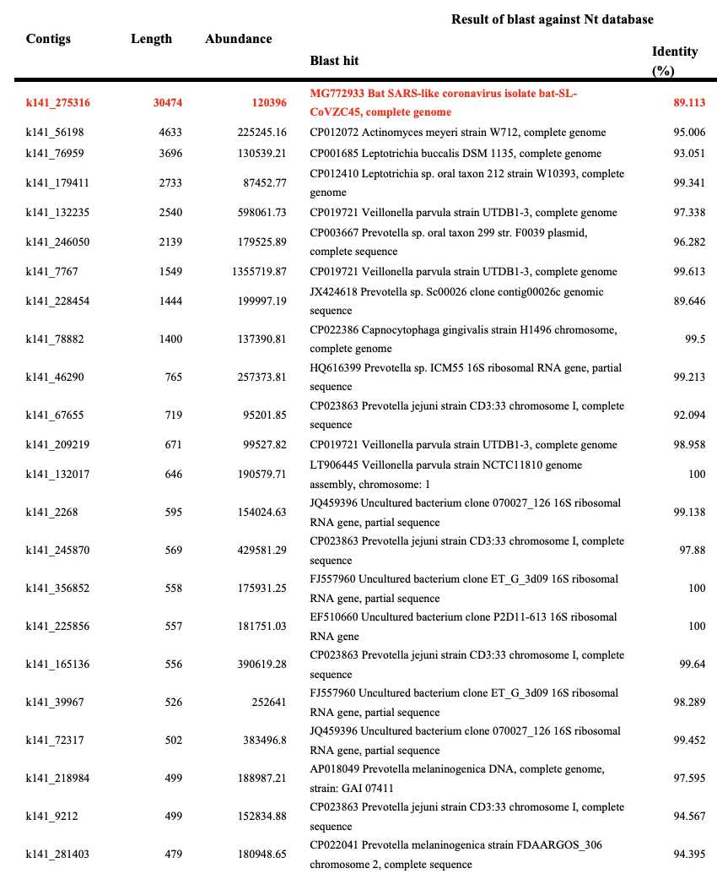
You can also find out which contigs are viral by trying to align all contigs against a FASTA file for virus reference sequences. For example here I ran MEGAHIT on Wu et al.'s raw reads. I got only 29,463 instead of 384,096 contigs because human reads were masked with N bases in the version of Wu et al.'s reads that were uploaded to the SRA:
$ brew install megahit -s # `-s` compiles from source because the bottle was compiled against GCC 9 so it gave me the error `dyld: Library not loaded: /usr/local/opt/gcc/lib/gcc/9/libgomp.1.dylib` [...] $ curl -s 'https://www.ebi.ac.uk/ena/portal/api/filereport?accession=SRR10971381&result=read_run&fields=fastq_ftp&format=tsv&download=true&limit=0'|sed 1d|cut -f2|tr \; \\n|sed s,^,ftp:,,|xargs wget -q $ megahit -1 SRR10971381_1.fastq.gz -2 SRR10971381_2.fastq.gz -o megawu [...] 2023-09-17 20:46:46 - 29463 contigs, total 14438186 bp, min 200 bp, max 29802 bp, avg 490 bp, N50 458 bp 2023-09-17 20:46:59 - ALL DONE. Time elapsed: 4545.123885 seconds
When I aligned all contigs against virus refseqs, I got only 8 aligned contigs. There was only contig for SARS2 because the contig covered almost the entire genome of the virus apart from a part of the 3' UTR so the genome was not split into multiple shorter contigs. There's 4 contigs which matched different parts of the human endogenous retrovirus K113, which is usually matched by human reads because the genomes of HERVs are incorporated as part of the human genome. There was also one short contig that matched a Streptococcus bacteriophage, and there were two short contigs which matched a parvovirus:
$ conda install -c bioconda bbmap
[...]
$ wget -q https://ftp.ncbi.nlm.nih.gov/refseq/release/viral/viral.1.1.genomic.fna.gz
$ seqkit fx2tab viral.1.1.genomic.fna.gz|sed $'s/A*\t$//'|seqkit tab2fx|bbmask.sh window=20 in=stdin out=viral.fa # bbmask masks low-complexity regions to avoid spurious matches
$ bowtie2-build --thread 3 viral.fa{}
[...]
$ bowtie2 -p3 --no-unal -x viral.fa -fU megawu/final.contigs.fa|samtools sort -@2 ->megawu.bam
$ x=megawu.bam;samtools coverage $x|awk \$4|cut -f1,3-6|(gsed -u '1s/$/\terr%\tname/;q';sort -rnk4|awk -F\\t -v OFS=\\t 'NR==FNR{a[$1]=$2;next}{print$0,sprintf("%.2f",a[$1])}' <(samtools view $x|awk -F\\t '{x=$3;n[x]++;len[x]+=length($10);sub(/.*NM:i:/,"");mis[x]+=$1}END{for(i in n)print i"\t"100*mis[i]/len[i]}') -|awk -F\\t 'NR==FNR{a[$1]=$2;next}{print$0"\t"a[$1]}' <(seqkit seq -n viral.fa|gsed 's/ /\t/;s/,.*//') -)|column -ts$'\t'
#rname endpos numreads covbases coverage err% name
NC_045512.2 29870 1 29801 99.769 0.01 Severe acute respiratory syndrome coronavirus 2 isolate Wuhan-Hu-1
NC_022518.1 9471 4 3435 36.2686 10.16 Human endogenous retrovirus K113 complete genome
NC_012756.1 31276 1 703 2.24773 4.69 Streptococcus phage PH10
NC_022089.1 3779 2 607 16.0625 3.29 Parvovirus NIH-CQV putative 15-kDa protein
The STAT results of the raw reads also include a handful of reads that are classified under parvoviruses and Pseudonomas phages.
MEGAHIT uses a default minimum length of 200 bases for contigs, but I only got two 200-base contigs. When I did a BLAST search for the first contig, it matched the human genome (because some human reads were in at SRA even though the vast majority of human reads were masked). And when I did a BLAST search for the other contig, it had a 100% match with about 80% coverage for ribosomal RNA sequences of Salmonella, Klebsiella, and some other bacteria:
$ seqkit seq -M 200 megawu/final.contigs.fa|seqkit seq -w0 >k141_7662 flag=0 multi=1.0000 len=200 GCAAGAGTATATTTGCCTAGCCTTGAGGATTTCGTTGGAAACGGGATTGTCTTCAGAGAA AATCTAGACAGAAGCATTCTCAGAAACTTCTTTGGGATGTTTGCATTCAAGTCACAGAGT AGAACATTCCCTTTGGTAGAGCAGGTTTGAAACACTCTTTTTTTAGTATATGGAAGTGGA CATTTGGAGCGCTTTCAGGC >k141_2082 flag=0 multi=1.0000 len=200 GGAAAGGGCGACGACGTACTTTCGGGTACGAGCATACACAGGTGCTGCATGGCTGTCGTC AGCTCGTGTTGTGAAATGTTGGGTTAAGTCCCGCAACGAGCGCAACCCTTATCCTTTGTT GCCAGCGGTCCGGCCGGGAACTCAAAGGAGACTGCCAGTGATAAACTGGAGGAAGGTGGG GATGACGTCAAGTCATCATG
There were two contigs that were exactly 1,000 bases long. The other contig matched Prevotella veroralis on BLAST, but there was no significant similarity found for the other contig:
$ seqkit seq -gM 1000 -m 1000 megawu/final.contigs.fa|seqkit seq -gw0 >k141_23439 flag=1 multi=15.0000 len=1000 GTGATGATACAAGGAACAGCAGAGAGCCGCATGGACGAGTCGAGCATGAATAATATCTATGTTCGCACAACTGCGGGCATGGCTCCAGTAAGTGAGTTCTGTACGTTGAAGCGTGTTTATGGACCGTCAAATATCACTCGTTTCAACCTCTTTACCTCTATTGCGGTTAATGCGACACCAGCAAACGGGGTCTCTTCTGGAGAGGCTATTAAGGCGGCAGAGGAAGTGGCAAAGCAAGTGTTACCACAGGGATATGGCTATGAGTTCTCTGGCTTGACACGTTCAGAGCAGGAGTCATCGAACTCAACAGCGATGATCTTCGTCCTTTGTATCGTGTTTGTTTACTTGATTCTTAGTGCACAGTATGAGAGTTATATCCTCCCATTAGCCGTTATCTTGTCAATACCATTCGGTCTTGCAGGTGCGTTCATATTCACGATGATCTTCGGACATAGCAACGATATCTACATGCAAATATCCCTGATTATGTTGATTGGATTGTTGGCAAAGAACGCCATCCTTATCGTTGAGTTTGCTCTCGAGCGTCGCCGAACAGGTATGGCAATCAAGTATGCAGCCATCTTAGGCGCTGGCGCACGTCTTCGTCCTATCCTTATGACGTCTTTGGCAATGGTTGTCGGATTGTTGCCATTGATGTTTGCAAGCGGTGTAGGTCATAATGGTAACCAGACATTGGGTGCTGCTGCCGTCGGAGGTATGTTGATTGGTACACTCTGTCAGGTGTTTGTTGTACCAGCTCTATTCGCTGGCTTCGAGTACTTACAAGAGCGTATTAAGCCTATCGAGTTTGAAGATGAGGCCAATCGCGACGTCATTAAGGAACTCGAGCAATACGCGAAAGGACCTGCACATGATTATAAGGTAGAAGAGTAGTACTATTTTAAAAGAACAATAATGAAGAATAAAAATATAATCATCATAGTCCTTGCAGCCCTGTCATTGACAGGCTGTAAGAGTCTCTATGGCAATTACGAGTTCT >k141_27896 flag=1 multi=8.0000 len=1000 TAAAGTTTCTCCGCATGATAAAAAAGCCTGGATTTAATGTTTTTGGAGTTATTAAAGAATTTAACAAAAAAGAAGATAAGGCGGCATTTGTTCCACCTGAATCAACAGTAAAAAAGTCTGAAACAAAGGTAGAAGACAAGAAAACTACGTAACCAAATAGATTCCAATAATGGAAGATTTAATAGGGGTTTTTAGTCGTTTGACCGGACAAAACGAGGATACTGTCAAGGAAGTATTAAAAGACCTTGAAGGCGAGAAATTTGCCAAAGCAGCTGAAAAGCTATTGAATGACAATTTCGGTAAAAAGTTAGCCGAAACAGAATCTAAAGCACGGATTGACGCAGAAAAGAAGCAGCGAAGCCTTATCCTTACTGAACAGGAAAAGAAACTAAAATCAAAGTACAGTATCGAATCATTCGATGACTTTGAAGACTTAGTAGAAAAGATCCACGAGTCAGGAAAGTTAAGTTCCGGTGCAGATGAAGTAAGCGTTAAAAAGATCGAGAAGCTCGAAAAGGACATTGAGAAGATAAAGCAATCTGAACAGACTATTAAAAGCGAATACGAAGCATTTAAAAGTACAACGGAACGCAATGTTTTATCAGGTTCAATCAGAAAGAGCGCACTTGAGTTTTTAGAGCAAAACAATTTCGTGGTAAGTGGTAAGCAAAGGGTAAATGATAATTTCATTGATGAGCTTTTGAATATCGCAGATTATGAGGTTGTGAACGGTGAATTTATTCCACTTATTAAAGGAACGAAAGAGAGGTTGATGGATGATGTAAGAAATCCTATATCCGCTCAAGACTTGTTTAAAAAGGTAGGAATGGATTACTACGATGTTAAAAATGGAAATGATAGAGAAACGGCAGGAGCGTTCAATACGAAGCCTACAGGAACAGGAGGTTCAAAATACAACATAAGTCAATCAAGACTTTAACAATGCAATAGCAGGGGCAAAGACTACAGAAGAACTTGATGTAATCGAAAAAGAATATCA
But basically many of these shorter contigs match different parts of bacterial genomes. And there's only a tiny number of contigs for viruses. And the original reads by Wu et al. also had a lot of human contigs because human reads had not been masked with N bases.
The sequencing runs at the SRA have been analyzed with a program called STAT, which stands for SRA Taxonomic Analysis Tool. STAT relies on matches to 32-base k-mers to classify each read under some node in a taxonomical tree, where it's able to classify some reads on the species-level but other reads are only classified at higher taxonomical levels. [https://www.ncbi.nlm.nih.gov/pmc/articles/PMC8450716/]
You can see a visual breakdown of the STAT results from SRA's website by going to the "Analysis" tab and clicking "Show Krona View". [https://trace.ncbi.nlm.nih.gov/Traces/?view=run_browser&acc=SRR10971381&display=analysis] It shows that about 61% of reads are unidentified, about 33% of reads are classified under bacteria out of which about half are classified under Prevotella, about 5% of reads are classified under eukaryotes, and about 0.2% of reads are classified under viruses:
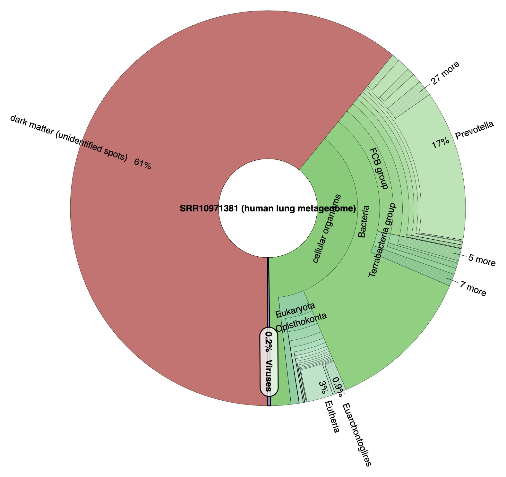
The 4 most abundant leaf nodes in the STAT tree are all different species of Prevotella, followed by SARS2 on the 5th place, and then followed by other species of bacteria, humans, and other hominins from misclassified human reads:
$ curl 'https://trace.ncbi.nlm.nih.gov/Traces/sra-db-be/run_taxonomy?cluster_name=public&acc=SRR10971381'>SRR10971381.stat $ jq -r '[.[]|.tax_table[]|.parent]as$par|[.[]|.tax_table[]|select(.tax_id as$x|$par|index($x)|not)]|sort_by(-.total_count)[]|((.total_count|tostring)+";"+.org)' SRR10971381.stat|head -n30 171042;Prevotella salivae F0493 (Prevotella are common in the human oral cavity) 155602;Prevotella veroralis F0319 89078;Prevotella scopos JCM 17725 57886;Prevotella melaninogenica D18 54238;Severe acute respiratory syndrome coronavirus 2 51814;Leptotrichia sp. oral taxon 212 (Leptotrichia is a common genus of bacteria in human oral cavity) 41272;Prevotella nanceiensis DSM 19126 = JCM 15639 33716;Homo sapiens 28813;Prevotella veroralis DSM 19559 = JCM 6290 23601;Leptotrichia hongkongensis 14350;Prevotella pallens 12403;Prevotella sp. F0091 9451;Prevotella sp. C561 9261;Prevotella jejuni 8531;Prevotella histicola JCM 15637 = DNF00424 7944;Prevotella sp. oral taxon 313 7612;Prevotella sp. oral taxon 299 str. F0039 7356;Capnocytophaga gingivalis ATCC 33624 (common oral bacteria) 6631;Pan troglodytes 6391;Prevotella loescheii DSM 19665 = JCM 12249 = ATCC 15930 6229;Klebsiella pneumoniae (found in normal flora of the mouth, skin, and intestines) 6104;Veillonella parvula ATCC 17745 (normal part of oral flora) 5389;Prevotella sp. oral taxon 472 str. F0295 5251;Pongo abelii (Sumatran orangutan; misclassified human reads) 5059;Clostridioides difficile (intestinal bacteria which cause of diarrhea and colitis) 4810;Selenomonas sputigena ATCC 35185 (bacteria found in the upper respiratory tract) 4492;Acinetobacter baumannii (common in hospital-derived infections; almost exclusively isolated from hospital environments) 4020;Porphyromonas sp. oral taxon 278 str. W7784 3793;Gorilla gorilla gorilla 3791;Prevotella sp. ICM33
Almost all viral leaf nodes were classified under SARS2, but there were also about 700 reads classified under a CRESS virus which might be some kind of spurious matches, and there were a few reads for a parvovirus and a Pseudonomas phage (which both also got short contigs in my MEGAHIT run):
$ jq -r '.[]|.tax_table[]|[.org,.total_count,.tax_id,.parent]|@tsv' SRR10971381.stat|awk -F\\t '{out[$3]=$0;parent[$3]=$4;name[$3]=$1;nonleaf[$4]}END{for(i in out){j=parent[i];chain="";do{chain=(chain?chain":":"")name[j];j=parent[j]}while(j!="");print out[i]"\t"!(i in nonleaf)"\t"chain}}'|sort -nr|grep Virus|sort -t$'\t' -rnk2|awk -F\\t '$5{print$2 FS$1" - "$6}'|head -n20|column -ts$'\t'
54238 Severe acute respiratory syndrome coronavirus 2 - Severe acute respiratory syndrome-related coronavirus:Sarbecovirus:Betacoronavirus:Orthocoronavirinae:Coronaviridae:Cornidovirineae:Nidovirales:Riboviria:Viruses
693 CRESS virus sp. - CRESS viruses:unclassified ssDNA viruses:unclassified DNA viruses:unclassified viruses:Viruses
159 uncultured virus - environmental samples:Viruses
20 Parvovirus NIH-CQV - unclassified Parvovirinae:Parvovirinae:Parvoviridae:Viruses
15 Curvibacter phage P26059B - unclassified Autographivirinae:Autographivirinae:Podoviridae:Caudovirales:Viruses
13 Pseudomonas phage HU1 - unclassified Podoviridae:Podoviridae:Caudovirales:Viruses
12 Bat coronavirus RaTG13 - Severe acute respiratory syndrome-related coronavirus:Sarbecovirus:Betacoronavirus:Orthocoronavirinae:Coronaviridae:Cornidovirineae:Nidovirales:Riboviria:Viruses
9 Iodobacter phage PhiPLPE - Iodobacter virus PLPE:Iodovirus:Myoviridae:Caudovirales:Viruses
9 Bat SARS-like coronavirus - Severe acute respiratory syndrome-related coronavirus:Sarbecovirus:Betacoronavirus:Orthocoronavirinae:Coronaviridae:Cornidovirineae:Nidovirales:Riboviria:Viruses
8 Rhodoferax phage P26218 - unclassified Podoviridae:Podoviridae:Caudovirales:Viruses
8 Prokaryotic dsDNA virus sp. - unclassified dsDNA viruses:unclassified DNA viruses:unclassified viruses:Viruses
8 Pangolin coronavirus - unclassified Betacoronavirus:Betacoronavirus:Orthocoronavirinae:Coronaviridae:Cornidovirineae:Nidovirales:Riboviria:Viruses
5 uncultured cyanophage - environmental samples:unclassified bacterial viruses:unclassified viruses:Viruses
5 Rimavirus - Siphoviridae:Caudovirales:Viruses
4 Genomoviridae sp. - unclassified Genomoviridae:Genomoviridae:Viruses
3 Streptococcus phage Javan363 - unclassified Siphoviridae:Siphoviridae:Caudovirales:Viruses
3 Sewage-associated circular DNA virus-14 - unclassified viruses:Viruses
3 RDHV-like virus SF1 - unclassified viruses:Viruses
3 Paramecium bursaria Chlorella virus NW665.2 - unclassified Chlorovirus:Chlorovirus:Phycodnaviridae:Viruses
3 Microviridae sp. - unclassified Microviridae:Microviridae:Viruses
Trinity is a lot slower than MEGAHIT, and it requires more RAM and more free disk space, so the first few times when I ran it on my local computer, I either ran out of disk space, or I ran out of RAM so it had to use swap and I terminated the run. I think it required around 20-30 GB RAM and around 50 GB disk space to assemble Wu et al.'s reads. The --max_memory flag which specifies a maximum limit for RAM and swap use cannot be omitted, and one of the first times I ran Trinity I think it was interrupted in the middle of the run because it exceeded the --max_memory limit. However running Trinity took about 24 hours on a server with 16 cores:
trinity --seqType fq --left SRR10971381_1.fastq --right SRR10971381_2.fastq --max_memory 30G --output trinityout
The contigs can be downloaded from here: f/Trinity.fasta.gz.
I got a total of only 159,532 contigs even though Wu et al. wrote that they got 1,329,960 contigs with Trinity, but it's probably because almost all human reads were masked in the reads that are publicly available at the SRA, so I got only a small number of human contigs.
My Trinity run produced six contigs for SARS2 but the longest contig is 29,869 bases even though Wu et al.'s longest contig was only 11,760 bases. It might be because I didn't trim the reads before running Trinity, or because human reads were masked in my run but not in Wu et al.'s run:
$ wget https://mongol-fi.github.io/f/Trinity.fasta.gz
$ seqkit stat Trinity.fasta.gz
file format type num_seqs sum_len min_len avg_len max_len
Trinity.fasta.gz FASTA DNA 159,532 46,995,710 186 294.6 29,879
$ curl 'https://eutils.ncbi.nlm.nih.gov/entrez/eutils/efetch.fcgi?db=nuccore&rettype=fasta&id=MN908947.3'>sars2.fa
$ bowtie2-build sars2.fa{,}
[...]
$ bowtie2 -p4 --no-unal -x sars2.fa -fU Trinity.fasta.gz|samtools sort ->trinity.bam
159532 reads; of these:
159532 (100.00%) were unpaired; of these:
159526 (100.00%) aligned 0 times
6 (0.00%) aligned exactly 1 time
0 (0.00%) aligned >1 times
0.00% overall alignment rate
$ samtools view trinity.bam|ruby -ane'l=$F[9].length;s=$F[3].to_i;e=s+l-$F[5].scan(/\d+(?=I)/).map(&:to_i).sum-1;puts [$F[0],s,e,l,$F.grep(/NM:i/)[0][/\d+/],$F[5]]*" "'|(echo contig_name start end length mismatches cigar_string;cat)|column -t
contig_name start end length mismatches cigar_string
TRINITY_DN1442_c18_g1_i2 1 29874 29879 10 4M5I29870M
TRINITY_DN1442_c18_g1_i4 77 26478 26402 4 21432M1D4970M
TRINITY_DN131_c1_g1_i1 19825 20128 306 17 299M2I5M
TRINITY_DN1442_c18_g1_i7 21531 26479 4998 54 7M5I3M5I3M4I8M35I4928M
TRINITY_DN1442_c18_g1_i1 26425 29871 3476 41 4M2I10M2D2M1I5M5I2M11I7M1D5M8I4M2I3408M
TRINITY_DN8024_c1_g1_i1 28394 28626 233 9 233M
The only differences that my longest contig has to the version of Wuhan-Hu-1 are that it has 5 extra nucleotides at the start, one nucleotide change in the middle, and it's missing the last 29 bases of the poly(A) tail:
$ R -e 'if(!require("BiocManager"))install.packages("BiocManager");BiocManager::install("Biostrings")'
[...]
$ aldi2(){ cat "$@">/tmp/aldi;Rscript --no-init-file -e 'm=t(as.matrix(Biostrings::readDNAStringSet("/tmp/aldi")));diff=which(rowSums(m!=m[,1])>0);split(diff,cumsum(diff(c(-Inf,diff))!=1))|>sapply(\(x)c(if(length(x)==1)x else paste0(x[1],"-",tail(x,1)),apply(m[x,,drop=F],2,paste,collapse="")))|>t()|>write.table(quote=F,sep=";",row.names=F)';}
$ seqkit sort -lr Trinity.fasta.gz|seqkit head -n1|cat - sars2.fa|mafft --thread 4 -|aldi2
[...]
;TRINITY_DN1442_c18_g1_i2 len=29879 path=[0:0-79 1:80-80 2:81-21515 4:21516-21544 5:21545-21565 6:21566-21568 7:21569-21569 8:21570-26483 9:26484-29878];NC_045512.2 Severe acute respiratory syndrome coronavirus 2 isolate Wuhan-Hu-1, complete genome
1-5;CGGGG;-----
21666;G;A
29880-29908;-----------------------------;AAAAAAAAAAAAAAAAAAAAAAAAAAAAA
The reason why the longest contig is shown to have 10 mismatches in the BAM file is that Bowtie2 doesn't allow gaps within the first 4 bases of the aligned read by default, so it treated the first 4 bases as mismatches and it added a 5-base insert after them:
$ bowtie2 -h|grep gbar --gbar <int> disallow gaps within <int> nucs of read extremes (4)
I don't know why Trinity produced 6 different contigs without merging them into a single contig, even though the longest contig covered the entire genome apart from the poly(A) tail. However it could be because the reads were not trimmed properly so the shorter contigs had mismatches in the middle of the contigs.
The shortest 233-base contig matched positions 28,394 to 28,626 of Wuhan-Hu-1. It has 3 wrong bases at the start of the contig, but it might be because many reads have 3-5 bases of extra crap at the ends but I didn't trim the ends of reads. The shortest contig also has 6 errors where an A base was changed to some other base, which may have been because sequencing errors are the most common for A bases and I didn't trim low-quality A bases from the ends of reads:
$ seqkit grep -p TRINITY_DN8024_c1_g1_i1 Trinity.fasta.gz|seqkit seq -rp|cat - sars2.fa|mafft --thread 4 --clustalout -
[...]
TRINITY_DN8024_ -------------gtaccccaaggtttacccaataatactgcgtcttggttcaccgctct
NC_045512.2 atcaaaacaacgtcggccccaaggtttacccaataatactgcgtcttggttcaccgctct
.********************************************
TRINITY_DN8024_ cacacaacatggcaaggaagaccttaaattccctcgaggacaaggcgttccaattaacac
NC_045512.2 cactcaacatggcaaggaagaccttaaattccctcgaggacaaggcgttccaattaacac
*** ********************************************************
TRINITY_DN8024_ caaaagcagtccagatgaccaaataggctactaccgaagagctaccagacgaaatcgtgg
NC_045512.2 caatagcagtccagatgaccaaattggctactaccgaagagctaccagacgaattcgtgg
*** ******************** **************************** ******
TRINITY_DN8024_ tggtgacggaaaaatgaaagatctcagtccaagaaggtatttctactacctaggaactgg
NC_045512.2 tggtgacggtaaaatgaaagatctcagtccaagatggtatttctactacctaggaactgg
********* ************************ *************************
TRINITY_DN8024_ gccaga------------------------------------------------------
NC_045512.2 gccagaagctggacttccctatggtgctaacaaagacggcatcatatgggttgcaactga
******
[...]
The website of the NCBI's sequence read archive has a tab which shows a breakdown of what percentage of reads are estimated to come from different organisms and different taxonomial nodes. The tab displays the results a program called SRA Taxonomy Analysis Tool (STAT), which searches for 32-base k-mers among the reads which match a set of reference sequences. A database which contains the number of reads which match each taxonomical node for each SRA run is currently about 500 GB in size, but you can search it through BigQuery at the Google Cloud Platform. [https://www.ncbi.nlm.nih.gov/sra/docs/sra-cloud-based-taxonomy-analysis-table/] I tried using BigQuery to search for the oldest sequencing runs which matched over 10,000 reads of SARS2 (taxid2697049):
select * from `nih-sra-datastore.sra.metadata` as m, `nih-sra-datastore.sra_tax_analysis_tool.tax_analysis` as tax where m.acc=tax.acc and tax_id=2697049 and total_count>10000 order by releasedate
I got 17 results from before 2020 but none of them had a single read which aligned against Wuhan-Hu-1 when I used Bowtie2 with the default settings. The oldest results I found which had reads that aligned against SARS2 were runs for the samples WHU01 and WHU02 which were submitted by Wuhan University and published on January 18th 2020 (in an unknown timezone). [https://www.ncbi.nlm.nih.gov/sra/?term=SRR10903402] When I ran MEGAHIT on the reads of the WHU01 sample that I didn't do any trimming, my longest contig was 17,699 bases long, and it was identical to positions 12197-29895 of Wuhan-Hu-1:
wget ftp://ftp.sra.ebi.ac.uk/vol1/fastq/SRR109/002/SRR10903402/SRR10903402_{1,2}.fastq.gz # download from ENA because downloading from SRA is too slow
curl 'https://eutils.ncbi.nlm.nih.gov/entrez/eutils/efetch.fcgi?db=nuccore&rettype=fasta&id=MN908947.3'>sars2.fa
megahit -1 SRR10903402_1.fastq.gz -2 SRR10903402_2.fastq.gz -o megawuhanjan
seqkit sort -lr megawuhanjan/final.contigs.fa|seqkit head -n1|cat - sars2.fa|mafft --clustalout -
When I trimmed the reads with fastp so that I used the default settings apart from a longer minimum length, almost half of the read pairs got an adapter sequence trimmed, so the adapter sequences may have earlier prevented assembling a longer contig. Now my longest contig was 29,809 bases long, and it missed the first 76 bases and last 19 bases of Wuhan-Hu-1 (which should demonstrate that it's common for MEGAHIT contigs to miss pieces from the start or end of the genome):
$ fastp -i SRR10903402_1.fastq.gz -I SRR10903402_2.fastq.gz -o SRR10903402_1.trim.fq.gz -O SRR10903402_2.trim.fq.gz
Read1 before filtering:
total reads: 676694
total bases: 101889418
[...]
Filtering result:
reads passed filter: 1126442
reads failed due to low quality: 193854
reads failed due to too many N: 0
reads failed due to too short: 33092
reads with adapter trimmed: 287572
bases trimmed due to adapters: 12910527
[...]
$ megahit -1 SRR10903402_1.trim.fq.gz -2 SRR10903402_2.trim.fq.gz -o megawuhanjan3
[...]
2023-05-20 14:22:39 - 425 contigs, total 246369 bp, min 286 bp, max 29809 bp, avg 579 bp, N50 540 bp
2023-05-20 14:22:39 - ALL DONE. Time elapsed: 72.962219 seconds
$ seqkit sort -lr megawuhanjan3/final.contigs.fa|seqkit head -n1|cat sars2.fa -|mafft ->temp.aln
[...]
$ Rscript --no-init-file -e 'm=t(as.matrix(Biostrings::readDNAStringSet("temp.aln")));pick=which(rowSums(m!=m[,1])>0);writeLines(unlist(lapply(split(pick,cummax(c(1,diff(pick)))),\(x)paste(x[1],tail(x,1),paste(apply(m[x,],2,paste,collapse=""),collapse=" ")))))'
1 76 ATTAAAGGTTTATACCTTCCCAGGTAACAAACCAACCAACTTTCGATCTCTTGTAGATCTGTTCTCTAAACGAACT ----------------------------------------------------------------------------
29885 29903 AAAAAAAAAAAAAAAAAAA T------------------
When I did variant calling for the reads submitted by Wuhan University so that I used Wuhan-Hu-1 as the reference, I didn't get a single variant as expected:
brew install bowtie2 samtools bcftools
bowtie2-build sars2.fa{}
x=wuhanjan;bowtie2 -p3 -x sars2.fa -1 SRR10903402_1.trim.fq.gz -2 SRR10903402_2.trim.fq.gz --no-unal|samtools sort -@2 ->$x.bam
samtools index $x.bam;bcftools mpileup -f sars2.fa $x.bam|bcftools call -mv -Ob -o $x.bcf;bcftools index $x.bcf;bcftools consensus -f sars2.fa $x.bcf>$x.fa
Some of the reads aligned by Bowtie2 had a longer poly(A) tail than Wuhan-Hu-1, so I tried aligning the untrimmed reads against a version of Wuhan-Hu-1 with an extended poly(A) tail. I found one read where the poly(A) tail started 73 bases from the end of the read, even though it had a bunch of non-A bases near the end of the read and it only had 48 contiguous A bases. But I also got another read with 47 contiguous A bases, another with 39, and another with 38. And may of the long segments of A bases are preceded by GAATGAC which are also the last bases of Wuhan-Hu-1 before the poly(A) tail. So I guess the reads may have included samples of SARS2 which actually had a poly(A) tail longer than 33 bases:
$ (cat sars2.fa;echo AAAAAAAAAAAAAAAAAAAAAAAAAAAAAAAAAAAAAAAAAAAAAAAAAAAAAAAAAAAAAAAAA)>sars2a.fa
$ bowtie2-build sars2a.fa{}
[...]
$ bowtie2 -x sars2a.fa -1 SRR10903402_1.fastq.gz -2 SRR10903402_2.fastq.gz --no-unal -p3|samtools sort -@2 ->sorted54.bam
[...]
$ samtools view sorted54.bam|cut -f4,10,17|tail -n8|column -t
29755 ACGTGTGCTCTTCCGATCTGCTAGGGAGAGCTGCCTATATGGAAGAGCCCTAATTTGTAAAATTAATTTTAGTAGTGCTATCCCCATGTGATTTTAATAGCTTTTTAGGAGAATGACAAAAAAAAAAAAAAAAAAAAAAAAAAAGAAAAAA NM:i:14
29756 AGTGTACAGTGAACAATGCTAGGGAGAGCTGCCTATATGGAAGAGCCCTAATGTTTAAAATTAATTTTAGTAGTGCTATCCCCATGTGATTTTAATAGCTTTTTAGGAGAATGACAAAAAAAAAAAAAAAAAAAAAAAAAATCAAACACA NM:i:6
29757 GTATCAAGTAAAAAATGTTAGGGAGAATTGCCTAAATGGAAAAGCCATAATTTTTAAAAATAATTTTAGTAGTGTTATCCCCATGTAATTTTAAAAATTTCTTAGGAGAAAAAAAAAAAAAAAAAAAAAAAAAAAAAAAAAAAAAAAGAG NM:i:24
29759 GTACAGTGAACAATGCTAGGGAGAGCTGCCTATATGGAAGAGCCCTAATGTGTAAAATTAATTTTAGTAGTGCTATCCCCATGTGATTTTAAAAGCTTCTTAGGAGAATGACAAAAAAAAAAAAAACAAAAAAAAAAAATCAAACACAAA NM:i:6
29761 ACAGTGAACAATGCTAGGGAGAGCTGCCTATATGGAAGAGCCTTAATGTGTAAAATTAATGTTAGGAGTGCTATCTCCATGTGATTTTAATAGCTTCTTAGGAGAATGACAAAAAAAAAAAAAAAAAAAATGATATGAATAGCGTTGGTTA NM:i:19
29762 AAGGAAAAAAAGCTAGGAAGAGATGCCTAAATGGAAAAAACAAAATTTTAAAAATTAATTTTAGGGGGGGTATCCCCATGTGATTTTAATAATTTTTTAGGAAAAAAAAAAAAAAAAAAAAAAAAAAAAAAAAAAAAAAAAAAAAAAAGAA NM:i:28
29765 TGAACAATGCTAGGGGGAGCTGCCTATATGGAAAAGCCCTAATGTGTAAAATTAATTTTAGTAGTGCTATCCCCATGTGATTTTAAAAGCTTCTTAGGAGAAAGACAAAAAAAAAAAAAAAAAATAAAAAAAAAAAAAATCAAACAC NM:i:9
29773 GCTAGGGAGAGCTGCCTATATGGAAGAGCCCTAATGTGTAAAATTAATTTTAGTAGTGCTATCCCCATGTGATTTTAATAGCTTCTTAGGAGAATGACAAAAAAAAAAAAAAAAAAAAAAAAAAAAGAACGGAAGAGCGGCGGAGAGGAAA NM:i:15
29773 GCTAGGGAGAGCTGCCTATATGGAAGAGCCCTAATGTGTAAAATTAATTTTAGTAGTGCTATCCCCATGTGATTTTAATAGCTTCTTAGGAGAATGACAAAAAAAAAAAAAAAAAAAAAAAAAAAAAAAAAAAAAACGGAAAAGCAACGGA NM:i:8
29793 TGGAAGAGCCCTAATGAGTAAAATTAATTTTAGTAGTGCTATCCCCATGTGATTTTAATAGCTTCTTAGGAGAATGACAAAAAAAAAAAAAAAAAAAAAAAAAAAAAAAAAAAAAAAAAAAAAAAAGGAAAAAGCAAGTGGAGGAAAAAAA NM:i:11
$ samtools view sorted54.bam|cut -f10|tail -n100|grep -Eo A+|awk '{print length}'|sort -n|tail # longest consecutive segments of A bases among last 100 reads
26
27
27
27
28
34
38
39
47
48
The last read shown above has 48 consecutive A bases. Its reverse pair has 47 consecutive T bases even though they're at a different spot so that there's only 4 bases before them, even though in the forward pair there's 25 bases after the segment of contiguous A bases:
$ seqkit grep -p $(samtools view sorted54.bam|tail -n1|cut -f1) SRR10903402_1.fastq.gz |seqkit seq -s TTGATTTTTTTTTTTTTTTTTTTTTTTTTTTTTTTTTTTTTTTTTTTTTTTCCTAAAAAACTTTTAAAATCAATTGGGGTTAGCACTACTAAAATTAATTTTACAAATTTGGGCTTTTCCAAAATGGGAAAAACACACGTCTAAACCCCAG
Some people were saying that it was somehow problematic that the full poly(A) tail of Wuhan-Hu-1 could not be reproduced from the metagenomic sequencing run of Wu et al. 2020. However above I have shown that there's another early metagenomic sequencing run of SARS2 where the reads actually feature a long poly(A) tail.
When I additionally ran MEGAHIT on the reads of the WHU02 sample, my longest contig was 29,997 bases long, and it was otherwise identical to Wuhan-Hu-1 except it had an insertion of 109 bases at the beginning, there was one nucleotide change after the insertion, and the poly(A) tail was missing the last 15 bases. When I did a BLAST search for the 109-base insertion, I found that it was 100% identical to the reverse complement of the segment between positions 191 and 299 in Wuhan-Hu-1.
In order to test if the genome of SARS2 can be assembled from other metagenomic datasets, I searched the SRA for the phrase human bronchoalveolar pneumonia. [https://www.ncbi.nlm.nih.gov/sra/?term=human+bronchoalveolar+pneumonia] I picked the first result which was from a study titled "Bronchoalveolar Lavage Fluid Metagenomic Next-Generation Sequencing in non-severe and severe Pneumonia". [https://www.ncbi.nlm.nih.gov/sra/?term=SRR22183690] When I ran MEGAHIT with the default settings, I got a total of about 500 contigs with a maximum length of about 8,000. When I aligned the contigs against a file of about 15,000 virus reference sequences, I got only 14 aligned contigs, none of which matched SARS2:
$ wget -q ftp://ftp.sra.ebi.ac.uk/vol1/fastq/SRR221/090/SRR22183690/SRR22183690_{1,2}.fastq.gz
$ brew install megahit -s # `-s` compiles from source because the bottle was compiled against GCC 9 so it gave me the error `dyld: Library not loaded: /usr/local/opt/gcc/lib/gcc/9/libgomp.1.dylib`
[...]
$ megahit -1 SRR22183690_1.fastq.gz -2 SRR22183690_2.fastq.gz -o megapneumonia
[...]
$ seqkit stat megapneumonia/final.contigs.fa
file format type num_seqs sum_len min_len avg_len max_len
megapneumonia/final.contigs.fa FASTA DNA 508 230,544 213 453.8 8,451
$ brew install bowtie2 seqkit gnu-sed
[...]
$ wget -q https://ftp.ncbi.nlm.nih.gov/refseq/release/viral/viral.1.1.genomic.fna.gz
$ seqkit fx2tab viral.1.1.genomic.fna.gz|sed $'s/A*\t$//'|seqkit tab2fx>viral.fa
$ bowtie2-build viral.fa{,}
[...]
$ bowtie2 -p3 -x viral.fa -fU megapneumonia/final.contigs.fa --no-unal|samtools sort ->megapneumonia.bam
[...]
$ x=megapneumonia.bam;samtools coverage $x|awk \$4|cut -f1,3-6|(gsed -u '1s/$/\terr%\tname/;q';sort -rnk4|awk -F\\t -v OFS=\\t 'NR==FNR{a[$1]=$2;next}{print$0,sprintf("%.2f",a[$1])}' <(samtools view $x|awk -F\\t '{x=$3;n[x]++;len[x]+=length($10);sub(/.*NM:i:/,"");mis[x]+=$1}END{for(i in n)print i"\t"100*mis[i]/len[i]}') -|awk -F\\t 'NR==FNR{a[$1]=$2;next}{print$0"\t"a[$1]}' <(seqkit seq -n viral.fa|gsed 's/ /\t/;s/, .*//') -)|column -ts$'\t'
#rname endpos numreads covbases coverage err% name
NC_022518.1 9472 7 2334 24.641 5.13 Human endogenous retrovirus K113 complete genome
NC_050152.1 101660 1 250 0.245918 0.00 Enterobacteria phage P7
NC_032111.1 163005 1 143 0.0877274 3.47 BeAn 58058 virus
NC_018464.1 927 1 87 9.38511 0.45 Shamonda virus N and NSs genes
NC_007610.1 131384 1 45 0.0342507 0.22 Listeria bacteriophage P100
NC_037667.1 2077288 1 36 0.00173303 0.00 Pandoravirus quercus
NC_021858.1 1908524 1 34 0.00178148 0.00 Pandoravirus dulcis
NC_011189.1 3418 1 34 0.994734 0.00 Mikania micrantha mosaic virus RNA2
The contigs which matched human endogenous retrovirus K113 probably just matched the human genome. When I did a BLAST search for the longest contig, it got a 98.9% identical match to both some human endogenous retroviruses and to human DNA. When I downloaded other metagenomic sequencing runs for human lung or BALF samples from SRA and aligned the reads against virus refseqs, human endogenous retrovirus K113 got the highest coverage for most runs, including SRR22183691, SRR22183705, SRR1553689, and SRR22183702. And when I did a BLAST search for the full sequence of K113, it was about 98.8% identical to a segment of human DNA.
Below I aligned 194 sequences of SARS1 and then printed the last 100 bases of the alignment. You can see that there's a lot of variation in the length of the poly(A) tail, and many sequences are even missing a part of the 3' end before the poly(A) tail:
$ curl -Lso sarslike.fa 'https://drive.google.com/uc?export=download&id=1eq9q_6jPbjvfvKnpAWDkbIyjgky7cjv5'
$ seqkit grep -nrp SARS\ coronavirus sarslike.fa|mafft --quiet --thread 4 ->sars1.aln
$ seqkit subseq -r-100:-1 sars1.aln|seqkit fx2tab|awk -F\\t '{print$2,$1}'|sed 's/, complete genome//'
tgtgtaaaattaattttagtagtgctatccccatgtgattttaatagcttcttag-gagaatgac----------------------------------- FJ882959.1 SARS coronavirus MA15 ExoN1 isolate P3pp6
tgtgtaaaattaattttagtagtgctatccccatgtgattttaatagcttcttag-gagaatgac----------------------------------- FJ882951.1 SARS coronavirus MA15 ExoN1 isolate P3pp3
tgtgtaaaattaattttagtagtgctatccccatgtgattttaatagcttcttag-gagaatgac----------------------------------- FJ882962.1 SARS coronavirus MA15 ExoN1 isolate P3pp10
tgtgtaaaattaattttagtagtgctatccccatgtgattttaatagcttcttag-gagaatgac----------------------------------- FJ882942.1 SARS coronavirus MA15 ExoN1 isolate P3pp5
tgtgtaaaattaattttagtagtgctatccccatgtgattttaatagcttcttag-gagaatgac----------------------------------- FJ882943.1 SARS coronavirus MA15 ExoN1
tgtgtaaaattaattttagtagtgctatccccatgtgattttaatagcttcttag-gagaatgac----------------------------------- FJ882957.1 SARS coronavirus MA15
tgtgtaaaattaattttagtagtgctatccccatgtgattttaatagcttcttag-gagaatgac----------------------------------- FJ882952.1 SARS coronavirus MA15 isolate P3pp4
tgtgtaaaattaattttagtagtgctatccccatgtgattttaatagcttcttag-gagaatgac----------------------------------- FJ882958.1 SARS coronavirus MA15 isolate P3pp7
tgtgtaaaattaattttagtagtgctatccccatgtgattttaatagcttcttag-gagaatgac----------------------------------- FJ882948.1 SARS coronavirus MA15 isolate P3pp3
tgtgtaaaattaattttagtagtgctatccccatgtgattttaatagcttcttag-gagaatgac----------------------------------- FJ882945.1 SARS coronavirus MA15 isolate P3pp6
tgtgtaaaattaattttagtagtgctatccccatgtgattttaatagcttcttag-gagaatgac----------------------------------- FJ882961.1 SARS coronavirus MA15 isolate P3pp5
tgtgtaaaattaattttagtagtgctatccccatgtgattttaatagcttcttag-gagaatgac----------------------------------- MK062180.1 SARS coronavirus Urbani isolate icSARS-MA
tgtgtaaaattaattttagtagtgctatccccatgtgattttaa-------------------------------------------------------- FJ882930.1 SARS coronavirus ExoN1
tgtgtaaaattaattttagtagtgctatccccatgtgattttaa-------------------------------------------------------- FJ882926.1 SARS coronavirus ExoN1
tgtgtaaaattaattttagtagtgctatccccatgtgattttaatagcttcttag-gagaatgac----------------------------------- MK062179.1 SARS coronavirus Urbani isolate icSARS
tgtgtaaaattaattttagtagtgctatccccatgtgattttaa-------------------------------------------------------- FJ882938.1 SARS coronavirus wtic-MB
tgtgtaaaattaattttagtagt----------------------------------------------------------------------------- HQ890526.1 SARS coronavirus MA15 ExoN1 isolate d2ym1
tgtgtaaaattaattttagtag------------------------------------------------------------------------------ HQ890532.1 SARS coronavirus MA15 ExoN1 isolate d4ym2
tgtgtaaaattaattttagtagt----------------------------------------------------------------------------- HQ890538.1 SARS coronavirus MA15 ExoN1 isolate d2om5
tgtgtaaaattaattttagtagt----------------------------------------------------------------------------- HQ890535.1 SARS coronavirus MA15 ExoN1 isolate d2om2
tgtgtaaaattaattttagtagt----------------------------------------------------------------------------- HQ890529.1 SARS coronavirus MA15 ExoN1 isolate d2ym4
tgtgtaaaattaattttagtag------------------------------------------------------------------------------ HQ890531.1 SARS coronavirus MA15 ExoN1 isolate d4ym1
tgtgtaaaattaattttagtagt----------------------------------------------------------------------------- JF292906.1 SARS coronavirus MA15 ExoN1 isolate d3om5
tgtgtaaaattaattttagtagt----------------------------------------------------------------------------- JF292905.1 SARS coronavirus MA15 ExoN1 isolate d3om4
tgtgtaaaattaattttagtagtgctatccccatgtgattttaatagcttcttag-gagaatgac----------------------------------- DQ497008.1 SARS coronavirus strain MA-15
tgtgtaaaattaattttagtag------------------------------------------------------------------------------ JF292903.1 SARS coronavirus MA15 ExoN1 isolate d4ym5
tgtgtaaaattaattttagtagtgctatccccatgtgattttaa-------------------------------------------------------- FJ882928.1 SARS coronavirus ExoN1 isolate P1pp1
tgtgtaaaattaattttagtagtgctatccccatgtgattttaa-------------------------------------------------------- FJ882927.1 SARS coronavirus wtic-MB isolate P1pp1
tgtgtaaaattaattttagtagt----------------------------------------------------------------------------- JF292909.1 SARS coronavirus MA15 isolate d2ym4
tgtgtaaaattaattttagtagt----------------------------------------------------------------------------- JF292915.1 SARS coronavirus MA15 isolate d4ym5
tgtgtaaaattaattttagtagt----------------------------------------------------------------------------- HQ890541.1 SARS coronavirus MA15 isolate d2ym1
tgtgtaaaattaattttagtagtgctatccccatgtgattttaatagcttcttag-gagaatgac----------------------------------- AY278741.1 SARS coronavirus Urbani
tgtgtaaaattaattttagtagt----------------------------------------------------------------------------- FJ882953.1 SARS coronavirus MA15 ExoN1 isolate P3pp4
tgtgtaaaattaattttagtagt----------------------------------------------------------------------------- FJ882933.1 SARS coronavirus wtic-MB isolate P3pp6
tgtgtaaaattaattttagtagt----------------------------------------------------------------------------- FJ882935.1 SARS coronavirus wtic-MB isolate P3pp21
tgtgtaaaattaattttagtagtg---------------------------------------------------------------------------- FJ882934.1 SARS coronavirus wtic-MB isolate P3pp29
tgtgtaaaattaattttagtagt----------------------------------------------------------------------------- FJ882936.1 SARS coronavirus wtic-MB isolate P3pp2
tgtgtaaaattaattttagtagtgctatccccatgtgattttaatagcttcttag-gagaatgacaaaaaaaaaaaaaaaaaaaaaaaa----------- AY323977.2 SARS coronavirus HSR 1
tgtgtaaaattaattttagtagt----------------------------------------------------------------------------- FJ882937.1 SARS coronavirus wtic-MB isolate P3pp18
tgtgtaaaattaattttagtagtgctatccccatgtgattttaatagcttcttag-gagaatgacaaaaaaaaaaaaaaaaaaaaaaaa----------- DQ898174.1 SARS coronavirus strain CV7
tgtgtaaaattaattttagtagtgctatccccatgtgattttaatagcttcttag-gagaatgacaa--------------------------------- AY291451.1 SARS coronavirus TW1
tgtgtaaaattaattttagtagtgctatccccatgtgattttaatagcttcttag-gagaatgacaa--------------------------------- AY502928.1 SARS coronavirus TW5
tgtgtaaaattaattttagtagt----------------------------------------------------------------------------- FJ882949.1 SARS coronavirus wtic-MB isolate P3pp23
tgtgtaaaattaattttagtagt----------------------------------------------------------------------------- FJ882939.1 SARS coronavirus wtic-MB isolate P3pp16
tgtgtaaaattaattttagtagt----------------------------------------------------------------------------- FJ882932.1 SARS coronavirus wtic-MB isolate P3pp14
tgtgtaaaattaattttagtagtgctatccccatgtgattttaatagcttcttag-gagaatgac----------------------------------- JQ316196.1 SARS coronavirus HKU-39849 isolate UOB
tgtgtaaaattaattttagtagtgctatccccatgtgattttaatagcttcttag-gagaatgacaaaaaaaaaaaaaaaaaaaaaaaa----------- NC_004718.3 SARS coronavirus Tor2
tgtgtaaaattaattttagtagtgctatccccatgtgattttaatagcttcttag-gagaatgac----------------------------------- AY427439.1 SARS coronavirus AS
tgtgtaaaattaattttagtagtgctatccccatgtgattttaatagcttcttag-gagaatgac----------------------------------- AY283794.1 SARS coronavirus Sin2500
tgtgtaaaattaattttagtagtgctatccccatgtgattttaatagcttcttag-gagaatgacaaaa------------------------------- EU371559.1 SARS coronavirus ZJ02
tgtgtaaaattaattttagtagtgctatccccatgtgattttaatagcttcttag-gagaatgacaa--------------------------------- AY502929.1 SARS coronavirus TW6
tgtgtaaaattaattttagtagtgctatccccatgtgattttaatagcttcttag-gagaatgacaa--------------------------------- AY502927.1 SARS coronavirus TW4
tgtgtaaaattaattttagtagtgctatccccatgtgattttaatagcttcttag-gagaatgacaa--------------------------------- AY502926.1 SARS coronavirus TW3
tgtgtaaaattaattttagtagtgctatccccatgtgattttaatagcttcttag-gagaatgacaaaaaaaaaaaaaaaaaaaaaaaa----------- AY394998.1 SARS coronavirus LC1
tgtgtaaaattaattttagtagtgctatccccatgtgattttaatagcttcttag-gagaatgac----------------------------------- AY362699.1 SARS coronavirus TWC3
tgtgtaaaattaattttagtagtgctatccccatgtgattttaatagcttcttag-gagaatgacaa--------------------------------- AY502931.1 SARS coronavirus TW8
tgtgtaaaattaattttagtagtgctatccccatgtgattttaatagcttcttag-gagaatgacaa--------------------------------- AY502930.1 SARS coronavirus TW7
tgtgtaaaattaattttagtagtgctatccccatgtgattttaatagcttcttag-gagaatgacaaaaaaaaaaaaaaaaaaaaaaaa----------- AY282752.2 SARS coronavirus CUHK-Su10
tgtgtaaaattaattttagtagtgctatccccatgtgattttaatagcttcttag-gagaatgac----------------------------------- AP006557.1 SARS coronavirus TWH genomic RNA
tgtgtaaaattaattttagtagtgctatccccatgtgattttaatagcttcttag-gagaatgac----------------------------------- AY283796.1 SARS coronavirus Sin2679
tgtgtaaaattaattttagtagtgctatccccatgtgattttaatagcttcttag-gagaatgacaaaaaaaaaaaaaaaaaaaaaaaa----------- AY350750.1 SARS coronavirus PUMC01
tgtgtaaaattaattttagtagtgctatccccatgtgattttaatagcttcttag-gagaatgac----------------------------------- AY321118.1 SARS coronavirus TWC
tgtgtaaaattaattttagtagtgctatccccatgtgattttaatagcttcttag-gagaatgacaaaaaaaaaaaaaaaaaaaaaaaa----------- AY345986.1 SARS coronavirus CUHK-AG01
tgtgtaaaattaattttagtagtgctatccccatgtgattttaatagcttcttag-gagaatgacaa--------------------------------- AY502932.1 SARS coronavirus TW9
tgtgtaaaattaattttagtagtgctatccccatgtgattttaatagcttcttag-gagaatgacaaaaaaaaaaaaaaa-------------------- AY485278.1 SARS coronavirus Sino3-11
tgtgtaaaattaattttagtagtgctatccccatgtgattttaatagcttcttag-gagaatgac----------------------------------- JN854286.1 SARS coronavirus HKU-39849 isolate recSARS-CoV HKU-39849
tgtgtaaaattaattttagtagtgctatccccatgtgattttaatagcttcttag-gagaatgacaa--------------------------------- AY502923.1 SARS coronavirus TW10
tgtgtaaaattaattttagtagtgctatccccatgtgattttaatagcttcttag-gagaatgac----------------------------------- AP006561.1 SARS coronavirus TWY genomic RNA
tgtgtaaaattaattttagtagtgctatccccatgtgattttaatagcttcttag-gagaatgac----------------------------------- AP006560.1 SARS coronavirus TWS genomic RNA
tgtgtaaaattaattttagtagtgctatccccatgtgattttaatagcttcttag-gagaatgac----------------------------------- AY283798.2 SARS coronavirus Sin2774
tgtgtaaaattaattttagtagt----------------------------------------------------------------------------- FJ882940.1 SARS coronavirus ExoN1 isolate P3pp37
tgtgtaaaattaattttagtagtgctatccccatgtgattttaatagcttcttag-gagaatgacaaaaaaaaaaaaaaaaaaaaaaaaaaa-------- AY357075.1 SARS coronavirus PUMC02
tgtgtaaaattaattttagtagtgctatccccatgtgattttaatagcttcttag-gagaatgacaaaaaaaaaaaaaaaaaaaaaaaa----------- AY864805.1 SARS coronavirus BJ162
tgtgtaaaattaattttagtagtgctatccccatgtgattttaatagcttcttag-gagaatgac----------------------------------- AY291315.1 SARS coronavirus Frankfurt 1
tgtgtaaaattaattttagtagtgctatccccatgtgattttaatagcttcttag-gagaatgacaaaaaaaaaaaaaaaaaaaaaaaa----------- AY394990.1 SARS coronavirus HZS2-E
tgtgtaaaattaattttagtagtgctatccccatgtgattttaatagcttcttag-gagaatgacaaaaaaaaaaaaaaaaaaaaaaaa----------- AY394989.1 SARS coronavirus HZS2-D
tgtgtaaaattaattttagtagtgctatccccatgtgattttaatagcttcttag-gagaatgacaaaaaaaaaaaaa---------------------- AY310120.1 SARS coronavirus FRA
tgtgtaaaattaattttagtagtgctatccccatgtgattttaatagcttcttag-gagaatgacaaaaaaaaaaaaaaaaaaaaaaaa----------- AY345988.1 SARS coronavirus CUHK-AG03
tgtgtaaaattaattttagtagtgctatccccatgtgattttaatagcttcttag-gagaatgac----------------------------------- AP006559.1 SARS coronavirus TWK genomic RNA
tgtgtaaaattaattttagtagtgctatccccatgtgattttaatagcttcttag-gagaatgaca---------------------------------- AY559081.1 SARS coronavirus Sin842
tgtgtaaaattaattttagtagtgctatccccatgtgattttaatagcttcttag-gagaatgacaaaaaaaaaaaaaaaaaaaaaaaa----------- AY394991.1 SARS coronavirus HZS2-Fc
tgtgtaaaattaattttagtagtgctatccccatgtgattttaatagcttcttag-gagaatgacaaaaa------------------------------ AY559087.1 SARS coronavirus Sin3725V
tgtgtaaaattaattttagtagtgctatccccatgtgattttaatagcttcttag-gagaatgac----------------------------------- AP006558.1 SARS coronavirus TWJ genomic RNA
tgtgtaaaattaattttagtagtgctatccccatgtgattttaatagcttcttag-gagaatgac----------------------------------- MK062182.1 SARS coronavirus Urbani isolate icSARS-C3-MA
tgtgtaaaattaattttagtagtgctatccccatgtgattttaatagcttcttag-gagaatgaca---------------------------------- AY559096.1 SARS coronavirus Sin850
tgtgtaaaattaattttagtagtgctatccccatgtgattttaatagcttcttag-gagaatgacaaaaaaaaaaaaaaaaaaaaaaaa----------- AY394993.1 SARS coronavirus HGZ8L2
tgtgtaaaattaattttagtagtgctatccccatgtgattttaatagcttcttag-gagaatgacaaaaaaaaaaaaaaaaaaaaaaaa----------- AY394992.1 SARS coronavirus HZS2-C
tgtgtaaaattaattttagtagtgctatccccatgtgattttaatagcttcttag-gagaatgacaaaaaaaaaaaaaaa-------------------- AY278491.2 SARS coronavirus HKU-39849
tgtgtaaaattaattttagtagtgctatccccatgtgattttaatagcttcttag-gagaatgac----------------------------------- AY283797.1 SARS coronavirus Sin2748
tgtgtaaaattaattttagtagtgctatccccatgtgattttaatagcttcttag-gagaatgacaaaaaaaaaaaaaaaaaaaaaaaa----------- AY278554.2 SARS coronavirus CUHK-W1
tgtgtaaaattaattttagtagtgctatccccatgtgattttaatagcttcttag-gagaatgacaaaaaaaaaaaaaaaaaaaaaaaaaaaaaaaaaaa AY357076.1 SARS coronavirus PUMC03
tgtgtaaaattaattttagtagtgctatccccatgtgattttaatagcttcttag-gagaatgacaaaaaaaaaaaaaaaaa------------------ AY485277.1 SARS coronavirus Sino1-11
tgtgtaaaattaattttagtagt----------------------------------------------------------------------------- FJ882955.1 SARS coronavirus ExoN1 isolate P3pp19
tgtgtaaaattaattttagtagtgctatccccatgtgattttaatagcttcttag-gagaatgacaaaaaaaaaaaaaaaaaaaaaaaa----------- AY864806.1 SARS coronavirus BJ202
tgtgtaaaattaattttagtagtgctatccccatgtgattttaatagcttcttag-gagaatgaca---------------------------------- AY559088.1 SARS coronavirus SinP1
tgtgtaaaattaattttagtagtgctatccccatgtgattttaatagcttcttag-gagaatgaca---------------------------------- AY559092.1 SARS coronavirus SinP5
tgtgtaaaattaattttagtagt----------------------------------------------------------------------------- FJ882929.1 SARS coronavirus ExoN1 isolate P3pp1
tgtgtaaaattaattttagtagtgctatccccatgtgattttaatagcttcttag-gagaatgacaaaaaaaaaaa------------------------ AY559084.1 SARS coronavirus Sin3765V
tgtgtaaaattaattttagtagt----------------------------------------------------------------------------- FJ882931.1 SARS coronavirus ExoN1 isolate P3pp12
tgtgtaaaattaattttagtagtgctatccccatgtgattttaatagcttcttag-gagaatgac----------------------------------- GQ153547.1 Bat SARS coronavirus HKU3-12
tgtgtaaaattaattttagtagtgctatccccatgtgattttaatagcttcttag-gagaatgac----------------------------------- DQ084199.1 bat SARS coronavirus HKU3-2
tgtgtaaaattaattttagtagtgctatccccatgtgattttaatagcttcttag-gagaatgacaaaaaaaaaaaaaaaaaaaaaaaa----------- DQ022305.2 Bat SARS coronavirus HKU3-1
tgtgtaaaattaattttagtagtgctatccccatgtgattttaatagcttcttag-gagaatgacaaaaaaaaaaaaaaaaaaaaaaaa----------- DQ084200.1 bat SARS coronavirus HKU3-3
tgtgtaaaattaattttagtagtgctatccccatgtgattttaatagcttcttag-gagaatgac----------------------------------- GQ153540.1 Bat SARS coronavirus HKU3-5
tgtgtaaaattaattttagtagtgctatccccatgtgattttaatagcttcttag-gagaatgac----------------------------------- GQ153539.1 Bat SARS coronavirus HKU3-4
tgtgtaaaattaattttagtagtgctatccccatgtgattttaatagcttcttag-gagaatgac----------------------------------- GQ153541.1 Bat SARS coronavirus HKU3-6
tgtgtaaaattaattttagtagtgctatccccatgtgattttaatagcttcttag-gagaatgac----------------------------------- GQ153542.1 Bat SARS coronavirus HKU3-7
tgtgtaaaattaattttagtagtgctatccccatgtgattttaatagcttcttag-gagaatgac----------------------------------- GQ153546.1 Bat SARS coronavirus HKU3-11
tgtgtaaaattaattttagtagtgctatccccatgtgattttaatagcttcttag-gagaatgac----------------------------------- GQ153544.1 Bat SARS coronavirus HKU3-9
tgtgtaaaattaattttagtagtgctatccccatgtgattttaatagcttcttag-gagaatgac----------------------------------- GQ153545.1 Bat SARS coronavirus HKU3-10
tgtgtaaaattaattttagtagtgctatccccatgtgattttaatagcttcttag-gagaatgac----------------------------------- GQ153548.1 Bat SARS coronavirus HKU3-13
tgtgtaaaattaattttagtagtgctatccccatgtgattttaatagcttcttag-gagaatgac----------------------------------- GQ153543.1 Bat SARS coronavirus HKU3-8
tgtgtaaaattaattttagtagtgctatccccatgtgattttaatagcttcttag-gagaatgacaaaaaaaaaaaaaaaa------------------- DQ412043.1 Bat SARS coronavirus Rm1
tgtgtaaaattaattttagtagtgctatccccatgtgattttaatagcttcttag-gagaatgacgaaaaaaaaaaaaaaaaaaa--------------- DQ071615.1 Bat SARS coronavirus Rp3
---------------------------------------------------------------------------------------------------- AY348314.1 SARS coronavirus Taiwan TC3
---------------------------------------------------------------------------------------------------- AY338174.1 SARS coronavirus Taiwan TC1
---------------------------------------------------------------------------------------------------- AY338175.1 SARS coronavirus Taiwan TC2
tgtgtaaaattaattttagtagtgctatccccatgtgattttaatagcttcttag-gagaatgacaa--------------------------------- AY502924.1 SARS coronavirus TW11
tgtgtaaaattaattttagtagtgctatccccatgtgattttaatagcttcttag-gagaatgacaaaaaaaaaaaaaaaa------------------- AY313906.1 SARS coronavirus GD69
tgtgtaaaattaattttagtagtgctatccccatgtgattttaatagcttcttag-gagaatcac----------------------------------- AY304486.1 SARS coronavirus SZ3
tgtgtaaaattaattttagtagtgctatccccatgtgattttaatagcttcttag-gagaatgacaaaaaaaaaaaaaaaaaaaaaaaa----------- AY395003.1 SARS coronavirus ZS-C
tgtgtaaaattaattttagtagtgctatccccatgtgattttaatagcttcttag-gagaatgacaaaaaaaaaaaaaaaaaaaaaaaa----------- AY394996.1 SARS coronavirus ZS-B
tgtgtaaaattaattttagtagtgctatccccatgtgattttaatagcttcttag-gagaatgacaaaa------------------------------- AY390556.1 SARS coronavirus GZ02
tgtgtaaaattaattttagtagtgctatccccatgtgattttaatagcttcttag-gagaatc------------------------------------- AY515512.1 SARS coronavirus HC/SZ/61/03
tgtgtaaaattaattttagtagtgctatccccatgtgattttaatagcttcttag-gagaatgacaaaaaaaaaaaaaaaaaaaaaaaa----------- AY394995.1 SARS coronavirus HSZ-Cc
tgtgtaaaattaattttagtagtgctatccccatgtgattttaatagcttcttag-gagaatgacaaaaaaaaaaaaaaaaaaaaaaaa----------- AY394994.1 SARS coronavirus HSZ-Bc
tgtgtaaaattaattttagtagtgctatccccatgtgattttaatagcttcttag-gagaatgacaaaaaaaaaaaaaaaaaaaaaaaa----------- AY394987.1 SARS coronavirus HZS2-Fb
tgtgtaaaattaattttagtagtgctatccccatgtgattttaatagcttcttag-gagaatgacaaaaaaaaaaaaaaaaaaaaaaaa----------- AY394986.1 SARS coronavirus HSZ-Cb
tgtgtaaaattaattttagtagtgctatccccatgtgattttaatagcttcttag-gagaatgacaaaaaaaaaaaaaaaaaaaaaaaa----------- AY394985.1 SARS coronavirus HSZ-Bb
tgtgtaaaattaattttagtagtgctatccccatgtgattttaatagcttcttag-gagaatgacaaaaaaaaaaaaaaaaa------------------ AY278490.3 SARS coronavirus BJ03
tgtgtaaaattaattttagtagtgctatccccatgtgattttaatagcttcttag-gagaatgacaaaaaaaaaaaaaaaaaaaaaaaa----------- AY394983.1 SARS coronavirus HSZ2-A
tgtgtaaaattaattttagtagtgctatccccatgtgattttaatagcttcttag-gagaatgacaaaaaaaaaaaaaaaaa------------------ AY278488.2 SARS coronavirus BJ01
tgtgtaaaattaattttagtagt----------------------------------------------------------------------------- JX163927.1 SARS coronavirus Tor2 isolate Tor2/FP1-10851
tgtgtaaaattaattttagtagt----------------------------------------------------------------------------- JX163926.1 SARS coronavirus Tor2 isolate Tor2/FP1-10912
tgtgtaaaattaattttagtagt----------------------------------------------------------------------------- JX163925.1 SARS coronavirus Tor2 isolate Tor2/FP1-10895
tgtgtaaaattaattttagtagt----------------------------------------------------------------------------- JX163924.1 SARS coronavirus Tor2 isolate Tor2/FP1-10851
tgtgtaaaattaattttagtagt----------------------------------------------------------------------------- JX163923.1 SARS coronavirus Tor2 isolate Tor2/FP1-10912
tgtgtaaaattaattttagtagtgctatccccatgtga-------------------------------------------------------------- FJ882963.1 SARS coronavirus P2
tgtgtaaaattaattttagtagtgctatccccatgtgattttaatagcttcttag-gagaatgacaaaa------------------------------- EU371564.1 SARS coronavirus BJ182-12
tgtgtaaaattaattttagtagtgctatccccatgtgattttaatagcttcttag-gagaatgacaaaa------------------------------- EU371563.1 SARS coronavirus BJ182-8
tgtgtaaaattaattttagtagtgctatccccatgtgattttaatagcttcttag-gagaatgacaaaa------------------------------- EU371561.1 SARS coronavirus BJ182b
tgtgtaaaattaattttagtagtgctatccccatgtgattttaatagcttcttag-gagaatgacaaaa------------------------------- EU371560.1 SARS coronavirus BJ182a
tgtgtaaaattaattttagtagtgctatccccatgtgattttaatagcttcttag-gagaatgacaa--------------------------------- AY559095.1 SARS coronavirus Sin847
tgtgtaaaattaattttagtagtgctatccccatgtgattttaatagcttcttag-gagaatga------------------------------------ AY559086.1 SARS coronavirus Sin849
tgtgtaaaattaattttagtagtgctatccccatgtgattttaatagcttcttag-gagaatgacaa--------------------------------- AY559085.1 SARS coronavirus Sin848
tgtgtaaaattaattttagtagtgctatccccatgtgattttaatagcttcttag-gagaatgacaaaaaa----------------------------- AY559083.1 SARS coronavirus Sin3408
tgtgtaaaattaattttagtagtgctatccccatgtgattttaatagcttcttag-gagaatgacaaaaaaaaaaaaaaaaaaa---------------- AY654624.1 SARS coronavirus TJF
tgtgtaaaattaattttagtagt----------------------------------------------------------------------------- JX163928.1 SARS coronavirus Tor2 isolate Tor2/FP1-10895
tgtgtaaaattaattttagtagtgctatccccatgtgattttaatagcttcttag-gagaatgacaaaaa------------------------------ AY595412.1 SARS coronavirus LLJ-2004
tgtgtaaaattaattttagtagtgctatccccatgtgattttaatagcttcttag-gagaatgacaaaaaaaaaaaaaaaaaaaaaaaa----------- AY395002.1 SARS coronavirus LC5
tgtgtaaaattaattttagtagtgctatccccatgtgattttaatagcttcttag-gagaatgacaaaaaaaaaaaaaaaaaaaaaaaa----------- AY395000.1 SARS coronavirus LC3
tgtgtaaaattaattttagtagtgctatccccatgtgattttaatagcttcttag-gagaatgacaaaa------------------------------- EU371562.1 SARS coronavirus BJ182-4
tgtgtaaaattaattttagtagtgctatccccatgtgattttaatagcttctagg-aagaatga------------------------------------ AY559091.1 SARS coronavirus SinP4
tgtgtaaaattaattttagtagtgctatccccatgtgattttaatagcttcttag-gagaatgac----------------------------------- MK062183.1 SARS coronavirus Urbani isolate icSARS-C7
tgtgtaaaattaattttagtagtgctatccccatgtgattttaatagcttcttag-gagaatgac----------------------------------- MK062181.1 SARS coronavirus Urbani isolate icSARS-C3
tgtgtaaaattaattttagtagtgctatccccatgtgattttaatagcttcttag-gagaatgacaaaaaaaaaaaaaaaaaa----------------- AY278487.3 SARS coronavirus BJ02
tgtgtaaaattaattttagtagtgctatccccatgtgattttaatagcttcttag-gagaatgacaaaaaaaaaaaaaaaaaaaaa-------------- AY279354.2 SARS coronavirus BJ04
tgtgtaaaattaattttagtagtgctatccccatgtgattttaatagcttctaggagaaaatgaca---------------------------------- AY559090.1 SARS coronavirus SinP3
tgtgtaaaattaattttagtagtgctatccccatgtgattttaatagcttctta---------------------------------------------- AY304488.1 SARS coronavirus SZ16
tgtgtaaaattaattttagtagtgctatccccatgtgattttaatagcttcttag-gagaatgaca---------------------------------- AY559093.1 SARS coronavirus Sin845
tgtgtaaaattaattttagtagtgctatccccatgtgattttaatagcttcttag-gagaatgaca---------------------------------- AY559082.1 SARS coronavirus Sin852
tgtgtaaaattaattttagtagt----------------------------------------------------------------------------- FJ882947.1 SARS coronavirus wtic-MB isolate P3pp7
tgtgtaaaattaattttagtagt----------------------------------------------------------------------------- FJ882950.1 SARS coronavirus ExoN1 isolate P3pp60
tgtgtaaaattaattttagtagt----------------------------------------------------------------------------- FJ882944.1 SARS coronavirus ExoN1 isolate P3pp23
tgtgtaaaattaattttagta------------------------------------------------------------------------------- FJ882956.1 SARS coronavirus ExoN1 isolate P3pp53
tgtgtaaaattaattttagtagtgctatccccatgtgattttaatagcttctta---------------------------------------------- AY545914.1 SARS coronavirus isolate HC/SZ/79/03
tgtgtaaaattaattttagtagtgctatccccatgtgattttaatagcttcttag-gagaatcacaaaaaaaaaaaaaaaa------------------- AY545918.1 SARS coronavirus isolate HC/GZ/32/03
tgtgtaaaattaattttagtagtgctatccccatgtgattttaatagcttcttag-gagaatgacaaaaa------------------------------ AY545919.1 SARS coronavirus isolate CFB/SZ/94/03
tgtgtaaaattaattttagtagtgctatccccatgtgattttaatagcttcttag-gagaatcacaaaaaaaaaaaaaaaaaaaaa-------------- AY545917.1 SARS coronavirus isolate HC/GZ/81/03
tgtgtaaaattaattttagtagtgctatccccatgtgattttaatagcttcttag-gagaatcac----------------------------------- AY545916.1 SARS coronavirus isolate HC/SZ/266/03
tgtgtaaaattaattttagtagtgctatccccatgtgattttaatagcttcttag-gagaatc------------------------------------- AY572038.1 SARS coronavirus civet020
tgtgtaaaattaattttagtagtgctatccccatgtgattttaatagcttcttag-gagaatgacaaaaaaaaaaaaaaaaaaaaaaaa----------- AY613948.1 SARS coronavirus PC4-13
tgtgtaaaattaattttagtagtgctatccccatgtgattttaatagcttcttag-gagaatgacaaaaaaaaaaaaaaaaaaaaaaaa----------- AY613950.1 SARS coronavirus PC4-227
tgtgtaaaattaattttagtagtgctatccccatgtgattttaatagcttcttag-gagaatgacaaaaaaaaaaaaaaaaaaaaaaaa----------- AY613949.1 SARS coronavirus PC4-136
tgtgtaaaattaattttagtagtgctatccccatgtgattttaatagcttcttag-gagaatgacaaaaaaaaaaaaaaaaaaaaaaaa----------- AY613947.1 SARS coronavirus GZ0402
---------------------------------------------------------------------------------------------------- AY572034.1 SARS coronavirus civet007
---------------------------------------------------------------------------------------------------- AY686864.1 SARS coronavirus B039
---------------------------------------------------------------------------------------------------- AY572035.1 SARS coronavirus civet010
---------------------------------------------------------------------------------------------------- AY686863.1 SARS coronavirus A022
tgtgtaaaattaattttagtagtgctatccccatgtgattttaatagcttcttag-gagaatgacaaaaaaaaaaaaaaaaa------------------ AY278489.2 SARS coronavirus GD01
tgtgtaaaattaattttagtagtgctatccccatgtgattttaatagcttcttag-gagaatcacaaaaaaaa--------------------------- AY304495.1 SARS coronavirus GZ50
tgtgtaaaattaattttagtagtgctatccccatgtgattttaatagcttcttag-gaga---------------------------------------- DQ182595.1 SARS coronavirus ZJ0301 from China
tgtgtaaaattaattttagtagt----------------------------------------------------------------------------- GU553363.1 SARS coronavirus HKU-39849 isolate TCVSP-HARROD-00001
tgtgtaaaattaattttagtagtgctatccccatgtgattttaatagcttcttag-gagaatgacaaaaaaaaaaaaa---------------------- DQ640652.1 SARS coronavirus GDH-BJH01
tgtgtaaaattaattttagtagtgctatccccatgtgatttta----cacattag-ggctcttccatatagg---------------------------- AY461660.1 SARS coronavirus SoD
tgtgtaaaattaattttagtagt----------------------------------------------------------------------------- GU553365.1 SARS coronavirus HKU-39849 isolate TCVSP-HARROD-00003
tgtgtaaaattaattttagtagtgctatccccatgtgattttaatagcttcttag-gagaatgacaaaaaaaaaaaaaaaaaaaaaaaa----------- AY568539.1 SARS coronavirus GZ0401
tgtgtaaaattaattttagtagtgctatccccatgtgattttaatagcttcttag-gagaatcac----------------------------------- FJ959407.1 SARS coronavirus isolate A001
tgtgtaaaattaattttagtagtgctatccccatgtgattttaatagcttcttag-gagaatgacaaaaaaaaaaaaaaaaaaaaaaaa----------- AY394999.1 SARS coronavirus LC2
tgtgtaaaattaattttagtagtgctatccccatgtgattttaatagcttcttag-gagaatgac----------------------------------- AY283795.1 SARS coronavirus Sin2677
tgtgtaaaattaattttagtagtgctatccccatgtgattttaatagcttcttag-gagaatgacaaa-------------------------------- AY394850.2 SARS coronavirus WHU
tgtgtaaaattaattttagtagtgctatccccatgtgattttaatagcttcttag-gagaatgac----------------------------------- MT308984.1 Mutant SARS coronavirus Urbani clone SARS-Urbani-MA_SHC014-spike
tgtgtaaaattaattttagtagtgctatccccatgtgattttaatagcttcttag-gagaatgacaaaaaaaaaaaaaaaaaaaaaaaa----------- AY394978.1 SARS coronavirus GZ-B
tgtgtaaaattaattttagtagtgctatccccatgtgattttaatagcttcttag-gagaatgacaaaaaaaaaaaaaaaaaaaaaaaa----------- AY394979.1 SARS coronavirus GZ-C
The number of A bases at the end of the sequence was most often zero and next most often 24, and the maximum length of the poly(A) tail was 35 bases:
$ seqkit seq -s sars1.aln|tr -d -|rev|sed 's/[^a].*//'|awk '{print length}'|sort|uniq -c|sort -nk2
94 0
14 1
18 2
1 3
7 4
3 5
1 6
1 8
1 11
2 13
2 15
3 16
4 17
1 18
2 19
2 21
36 24
1 27
1 35
On GISAID, the SARS2 sequence with the oldest collection date is EPI_ISL_402123 (IPBCAMS-WH-01), which is listed as being collected on 2019-12-24. The sample was described in a paper by Ren et al. which was only published in May 2020. [https://www.ncbi.nlm.nih.gov/pmc/articles/PMC7147275/] However there's also a blog post about the procedure of sequencing the sample at which was posted at WeChat on January 30th[ https://freewechat.com/a/MzAxMjMyMDk0Ng%3d%3d/2650112053/1]
Compared to the third version of Wuhan-Hu-1 at GenBank, IPBCAMS-WH-01 has three nucleotide changes within the ORF1a gene and it's missing the last four bases of the poly(A) tail:
$ curl https://download.cncb.ac.cn/gwh/Viruses/Severe_acute_respiratory_syndrome_coronavirus_2_IPBCAMS-WH-01_GWHABKF00000000/GWHABKF00000000.genome.fasta.gz|gzip -dc|cat - <(curl 'https://eutils.ncbi.nlm.nih.gov/entrez/eutils/efetch.fcgi?db=nuccore&rettype=fasta&id=MN908947.3')|mafft --quiet ->temp.fa
$ Rscript -e 'm=t(as.matrix(Biostrings::readDNAStringSet("temp.fa")));pick=which(rowSums(m!=m[,1])>0);write.table(cbind(m[pick,],pick),quote=F,row.names=F,col.names=F)'
G A 3778
G A 8388
A T 8987
- A 29900
- A 29901
- A 29902
- A 29903
However the three nucleotide changes are probably just some kind of artifacts of sequencing or assembly. In a paper about early human cases, babarlelephant wrote: "The WHO report reanalyzed several of the early sequences and found that the three mutations of IPBCAMS-WH-01 were not supported by the raw reads (which are not publicly available)." [https://zenodo.org/record/6715352]
In one paper where there's a list of mutations in 66 early SARS2 sequences, IPBCAMS-WH-01 was the only sequence with any mutation out of A3778G, A8388G, and T8987A. [https://www.ncbi.nlm.nih.gov/pmc/articles/PMC7834520/] I found a text file which includes a list of mutations in about 80,000 GISAID sequences until September 2020. [https://preearth.net/pdfs/ids-cdate-sdate-name-country-mutations-77827.txt] Apart from IPBCAMS-WH-01, there were only 4 other sequences with A3778G, 2 with A8388G, and 4 with T8987A, but all of them had a collection date in March 2020 or later:
$ wget -q https://preearth.net/pdfs/ids-cdate-sdate-name-country-mutations-77827.txt
$ for x in A3778G A8388G T8987A;do awk '{$1=$1}1' FS='\n *' RS= OFS=\; ids-cdate-sdate-name-country-mutations-77827.txt|grep -v EPI_ISL_402123|grep $x|wc -l|sed s/^/$x\ /;done
A3778G 4
A8388G 2
T8987A 4
The paper by Ren et al. said: "Quality control processes included removal of low-complexity reads by bbduk (entropy = 0.7, entropy-window = 50, entropy k = 5; version: January 25, 2018),[11] adapter trimming, low-quality reads removal, short reads removal by Trimmomatic (adapter: TruSeq3-SE.fa:2:30:6, LEADING: 3, TRAILING: 3, SLIDING WINDOW: 4:10, MINLEN: 70, version: 0.36),[12] host removal by bmtagger (using human genome GRCh38 and yh-specific sequences as reference),[13] and ribosomal reads removal by SortMeRNA (version: 2.1b).[14]" Wu et al. didn't describe removing low-complexity reads, host reads, or ribosomal reads, but they just masked human reads with N bases in the reads they uploaded to the SRA.
If you search the NCBI's sequence read archive for something like sars nanopore, almost all results employ a PCR-based sequencing protocol where RNA is converted to cDNA and then segments of cDNA are amplified with PCR. The amplicon length is around 400 bases in the ARCTIC protocol and around 1,200 bases in the MIDNIGHT protocol.
However in a variant of nanopore sequencing called direct RNA nanopore sequencing, the conversion to cDNA is not needed, and the read lengths can exceed 10,000 bases. A paper from 2019 described using direct RNA nanopore sequencing to sequence almost the entire length of a coronavirus in a single piece. [https://genome.cshlp.org/content/29/9/1545.full]
When I searched the SRA for direct rna nanopore sars, there were only 130 results. [https://www.ncbi.nlm.nih.gov/sra/?term=direct+rna+nanopore+sars] In many runs, the maximum read length was only a few thousand bases, but I found one run where the longest SARS2 read was over 10,000 bases long. [https://www.ncbi.nlm.nih.gov/sra/?term=SRR11300652] The longest read in the entire run was about 52,000 bases, but the longest read that aligned against SARS2 was 13,831 bases long and it had about 93% identity with Wuhan-Hu-1:
$ curl -s 'https://eutils.ncbi.nlm.nih.gov/entrez/eutils/efetch.fcgi?db=nuccore&rettype=fasta&id=MN908947.3'>sars2.fa $ wget ftp://ftp.sra.ebi.ac.uk/vol1/fastq/SRR113/052/SRR11300652/SRR11300652_1.fastq.gz [...] $ brew install blast seqkit [...] $ makeblastdb -in sars2.fa -dbtype nucl [...] $ seqkit fq2fa SRR11300652_1.fastq.gz|seqkit sort -lr|seqkit head -n20|blastn -db sars2.fa -outfmt '6 qseqid pident length qlen qstart qend sstart send'|tr \\t ' ' SRR11300652.328671 92.657 14191 13831 1 13753 16008 29873
In 2022, someone who called themselves "a mathematician from Hamburg, who would like to remain unknown" published a paper titled "Structural analysis of sequence data in virology: An elementary approach using SARS-CoV-2 as an example". [https://impfen-nein-danke.de/u/structural_analysis_of_sequence_data_in_virology.pdf, https://impfen-nein-danke.de/u/structural_analysis_of_sequence_data_in_virology_tables_and_figures.pdf]
When he aligned Wu et al.'s reads with BBMap against reference genomes of HIV-1, hepatitis delta, and measles, he was able to get a large number of aligned reads, but that's because he ran BBMap with the minratio=0.1 parameter which caused it to tolerate a very high number of mismatches, so the most common length of his aligned reads was about 35-40 bases, and the average error rate among the reads was about 40%. And when he filtered his reads with reformat.sh, he also used a low required minimum length (37) and an extremely low required identity percent (60%). His paper says that he ran BBMap with "relatively unspecific settings", but actually he ran it with extremely liberal alignment criteria:
Basically, we mapped the paired-end reads (2x151 bp) with BBMap [23] to the reference sequences we considered (Tables and Figures: Table 3) using relatively unspecific settings. We then varied the minimum length (M1) and minimum (nucleotide) identity (M2) with reformat.sh to obtain corresponding subsets of the previously mapped sequences with appropriate quality. Increasing minimum length M1 or minimum nucleotide identity M2 thereby increases the significance of the respective mapping. Subsequently, we formed consensus sequences with the respective subsets of selected quality with respect to the selected reference. We set all bases with a quality lower than 20 to "N" (unknown). A quality of 20 means an error rate of 1% per nucleotide, which can be considered sufficient in the context of our analyses. Finally, the assessment of the agreement between reference and consensus sequences was performed using BWA [24], Samtools [25], and Tablet [26]. The ordered pair (M1; M2) = (37; 0.6) was just chosen to give error rates F1 and F2, respectively, of less than 10% for reference LC312715.1. The results of all calculations performed are shown in Tables and Figures: Table 4. The calculations show the highest significance for the choice of the ordered pair (37; 0.6), which can be seen from the highest error rates in each case. Comparable significance is provided by the ordered pairs (47; 0.50) and (25; 0.62). While the genome sequences associated with coronaviruses show error rates approximately above 10% for all ordered pairs considered (M1; M2), the error rates of the two sequences LC312715.1 (HIV) and NC_001653.2 (Hepatitis delta) are below 10% and decrease further for the ordered pairs (32; 0.60) and (30; 0.60).
From the figure below, you can see that the mode length was around 150 bases for the reads which aligned against Wuhan-Hu-1 (MN908947.3), but the mode length was around 35-40 bases for the reads which aligned against HIV-1, hepatitis delta, measles, and randomly generated sequences:
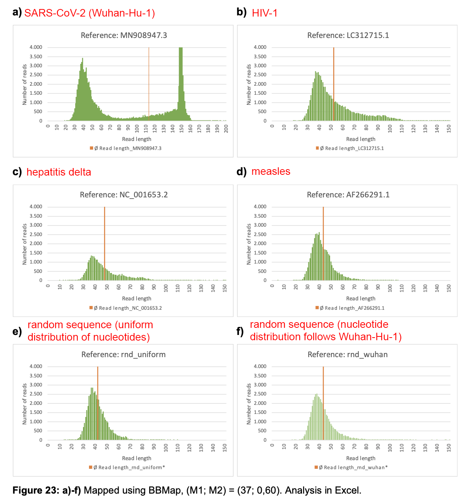
I don't understand why the figure above shows that there's some reads shorter than 37 bases even though the caption indicates that reads shorter than 37 bases were filtered out with reformat.sh.
And I also don't understand why the figure above shows that there were reads longer than 151 bases which aligned against Wuhan-Hu-1, because Wu et al.'s raw reads don't include any reads longer than 151 bases. Maybe the mathematician from Hamburg counted gaps in the middle of the aligned reads as part of the reads, or maybe he calculated read lengths based on the CIGAR strings so that he added together all numbers in the CIGAR string without skipping insertions relative to the reference. His paper indicated that he ran BBMap with the maxindel=0 parameter which doesn't allow indels, but it might be that he forgot to include the parameter in the run where he used Wuhan-Hu-1 as the reference.
In the plot for SARS-CoV-2 above, there's two peaks for the length of the aligned reads, where the first peak around length 37 looks almost as high as the second peak around length 150, but it's misleading that the y-axis is cut off so you can't see the full height of the second peak. I tried aligning Wu et al.'s raw reads against Wuhan-Hu-1 so that I ran mapPacBio.sh and reformat.sh with the same parameters as the mathematician from Hamburg, but I got about 11 times as many aligned reads of length 151 as reads of length 37:
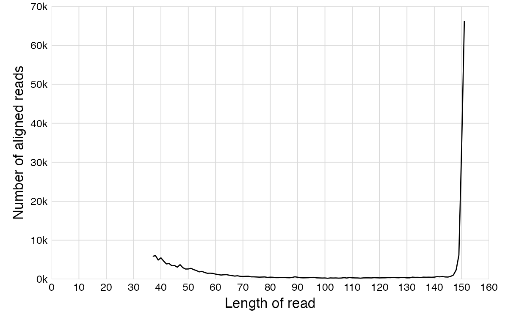
So you can compare my plot above to the plot by the mathematician by Hamburg to see how misleading it was that he cut off the y-axis, especially since it's the long reads with length around 151 that actually matched the virus reference sequences, and the short reads with length around 30-50 bases consisted of spurious matches that would have remained unaligned if BBMap was ran with regular parameters.
Next I tried aligning Wu et al.'s reads against other reference genomes, where I again ran BBMap and reformat.sh with the same parameters as the mathematician from Hamburg:
brew install --cask miniconda;conda init ${SHELL##*/}
conda install -c bioconda bbmap
brew install fastp
curl -s 'https://www.ebi.ac.uk/ena/portal/api/filereport?accession=SRR10971381&result=read_run&fields=fastq_ftp&format=tsv&download=true&limit=0'|sed 1d|cut -f2|tr \; \\n|sed s,^,ftp:,,|xargs wget -q
fastp -i SRR10971381_1.fastq.gz -I SRR10971381_2.fastq.gz -o SRR10971381_1.trim.fq.gz -O SRR10971381_2.trim.fq.gz # trim adapter sequences, trim low-quality ends of reads, discard reads shorter than 15 bases, discard reads with 5 or more `N` letters
printf %s\\n MN908947.3\ sars2 LC312715.1\ hiv NC_001653.2\ hepatitis AF266291.1\ measles>refs
cat refs|while read l m;do curl "https://eutils.ncbi.nlm.nih.gov/entrez/eutils/efetch.fcgi?db=nuccore&rettype=fasta&id=$l">ref.$m.fa;done
gshuf -rn30000<<<$'A\nC\nG\nT'|tr -d \\n|awk 'BEGIN{print">random"}1'>ref.random.fa
for x in $(cut -d\ -f2 refs) random;do mapPacBio.sh ref=ref.$x.fa in=SRR10971381_1.trim.fq.gz in2=SRR10971381_2.trim.fq.gz outm=$x.mapped.sam vslow k=8 maxindel=0 minratio=0.1;done
for x in $(cut -d\ -f2 refs) random;do reformat.sh in=$x.mapped.sam out=$x.filtered.sam minlength=37 idfilter=60 ow=t;done
for x in $(cut -d\ -f2 refs) random;do awk -F\\t '/NM:i:/{l=length($10);sub(/.*NM:i:/,"");sub("\t.*","");a[l]+=$0;n[l]++}END{for(i in a)print i,n[i],100*a[i]/n[i]/i}' OFMT=%.1f $x.filtered.sam|sed s/^/$x\ /;done>lengthcounts
The plot below shows the result of my BBMap alignment. If you compare SARS2 to HIV-1, hepatitis delta, or the random sequence, they all have a similar mismatch rate and similar number of aligned reads at the lowest read lengths, but after around length 55, the mismatch rate of SARS2 starts to drop until it reaches about 2% at length 151. However the mismatch rate of the other sequences remains at around 40% even for longer reads:
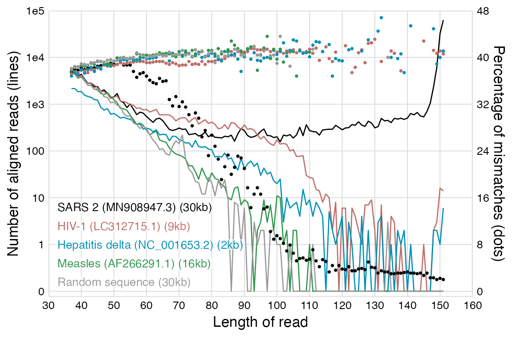
Hepatitis delta has an extremely short genome of only about 1,700 bases, so in the plot above, hepatitis delta gets less aligned reads at lengths 37 to 60 than the longer genomes. I don't know why the difference between hepatitis delta and the longer genomes is not bigger though, even though SARS2 and the random 30kb-genome are almost 20 times longer than hepatitis delta, but it might be because the longer sequences are more likely to include multimapped reads which I omitted from this analysis. Or it might be because I ran BBMap with such loose alignment criteria that even for a short reference genome, random short reads are likely to get aligned against some part of the genome.
(The number of mismatches is indicated by the NM tag in the SAM file format. For some reason BBMap doesn't include the NM tag for multimapped reads, which are reads that can map to two or more spots in the reference genome and which are indicated by a zero in the fifth column of the SAM file. Therefore I omitted multimapped reads from the plot above in order to calculate the average number of mismatches correctly.)
Here's R code for generating the plot above:
library(ggplot2)
t=read.table("lengthcounts")
t2=rbind(t,expand.grid(V1=unique(t$V1),V2=unique(t$V2),V3=0,V4=NA))
t=t2[!duplicated(t2[,1:2]),]
group=factor(t$V1,levels=unique(t$V1))
color=c("black",hcl(c(0,210,120)+15,60,55),"gray60")
ybreak=1e4
ybreak2=8
xstart=xbreak*floor(min(t$V2)/xbreak)
xend=xbreak*ceiling(max(t$V2)/xbreak)
yend2=48
zeroshift=1
log=log10(t$V3)+zeroshift
log[log==-Inf]=0
yend=ceiling(max(log))
ylabel=c(0,1,10,100,paste0("1e",3:ceiling(max(log-zeroshift))))
mismatch=t$V4*yend/yend2
label=c("SARS2 (MN908947.3) (30kb)","HIV-1 (LC312715.1) (9kb)","Hepatitis delta (NC_001653.2) (2kb)","Measles (AF266291.1) (16kb)","Random sequence (30kb)")
ystep=yend/15
labels=data.frame(x=.25*(xend-xstart),y=seq(.3*yend,by=-ystep,length.out=length(label)),label)
ggplot(t,aes(x=V2,y=log,color=group))+
geom_line(linewidth=.3)+
geom_point(aes(y=mismatch),size=.2)+
geom_label(data=labels,aes(x=x,y=y,label=label),fill=alpha("white",.7),label.r=unit(0,"lines"),label.padding=unit(.04,"lines"),label.size=0,color=color,size=2.2,hjust=0)+
scale_x_continuous(limits=c(xstart,xend),breaks=seq(0,xend,xbreak),expand=c(0,0))+
scale_y_continuous(limits=c(0,yend),breaks=c(0,zeroshift+seq(0,5,1)),labels=ylabel,expand=expansion(mult=c(.02,0)),sec.axis=sec_axis(trans=~.*yend2/yend,breaks=seq(0,yend2,ybreak2),name="Percentage of mismatches (dots)"))+
labs(x="Length of read",y="Number of aligned reads (lines)")+
scale_color_manual(values=color)+
theme(
axis.text=element_text(size=6,color="black"),
axis.ticks=element_blank(),
axis.ticks.length=unit(0,"in"),
axis.title=element_text(size=8),
legend.position="none",
panel.background=element_rect(fill="white"),
panel.border=element_rect(color="gray85",fill=NA,linewidth=.4),
panel.grid.major=element_line(color="gray85",linewidth=.2),
panel.grid.minor=element_blank(),
plot.background=element_rect(fill="white"),
plot.margin=margin(.05,.15,.05,.1,"in")
)
ggsave("1.png",width=4,height=2.5)
The code below selects reads that aligned against SARS2, that were at least 37 bases long so they survived the filtering by reformat.sh, and that are not multimapped reads so they are not missing the NM tag. The average number of mismatches per read was 37.5% for reads of length 37 and 2.0% for reads of length 151, and there were a total of 4,856 aligned reads for length 37 and 62,766 for length 151:
$ awk -F\\t '/NM:i:/{l=length($10);sub(/.*NM:i:/,"");sub("\t.*","");a[l]+=$0;n[l]++}END{for(i in a)print i,n[i],100*a[i]/n[i]/i}' OFMT=%.1f sars2.filtered.sam|(gsed -u 4q;echo ...;tail -n4)
37 4856 37.5
38 5010 38.0
39 3896 37.8
40 4363 38.2
...
148 2316 2.3
149 6084 2.0
150 32431 2.2
151 62766 2.0
However in the case of the reads that got aligned against the HIV-1 reference genome, there were only 14 aligned reads of length 151 and even those reads had 41% mismatches on average:
$ awk -F\\t '/NM:i:/{l=length($10);sub(/.*NM:i:/,"");sub("\t.*","");a[l]+=$0;n[l]++}END{for(i in a)print i,n[i],100*a[i]/n[i]/i}' OFMT=%.1f hiv.filtered.sam|(gsed -u 4q;echo ...;tail -n4)
37 4460 37.2
38 4471 37.5
39 3584 37.4
40 3843 37.8
...
148 2 41.2
149 3 40.7
150 16 41.1
151 14 40.6
In the last sentence of the following paragraph, I don't know if the mathematician from Hamburg meant to say 120,000 long reads instead of 120,000 short reads, because otherwise it doesn't make sense:
By excluding all mappable sequences longer than 100 nucleotides, essentially the approximately 120,000 reads associated with SARS-CoV-2 were removed. The coverage distribution of the remaining short sequences now appears random, analogous to Figure 13. Again, this correlates with high error rates R1 (29.90%) and R2 (29.96%). This indicates that no significant structure of reference MN908947.3 is included in the published sequences, except for the approximately 120,000 (Tables and Figures. Table 1) associated short reads.
He got about 120,000 mapped reads with average length around 146 when he used Bowtie2, but he got about 60,000 reads with average length around 46 when he used BBMap together with reformat.sh maxlength=100:
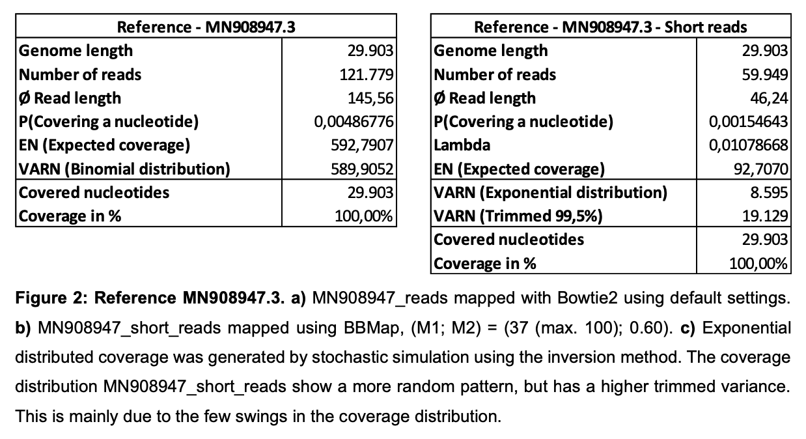
However in my previous plot shown above, even at lengths 60-100, the reads that map to SARS2 have a much lower mismatch rate than the reads that map to HIV-1, hepatitis delta, measles, or the random sequence. So you shouldn't just be looking at number of mapped reads or the coverage but you should also consider the average mismatch rate.
When I tried aligning Wu et al.'s reads with Bowtie2, I got zero reads that aligned against HIV-1, hepatitis delta, measles, or the random sequence. I got 121,779 reads which aligned against SARS2, which was identical to the figure reported by the Hamburg mathematician, because both of us did trimming with fastp using the default parameters.
With Bowtie2, the shortest reads that aligned against SARS2 were 31 bases long. There were less than a hundred reads at each length below 89, and their error rate was much lower than in the case of BBMap. However after around length 100-120, the results of Bowtie2 start to converge with BBMap:
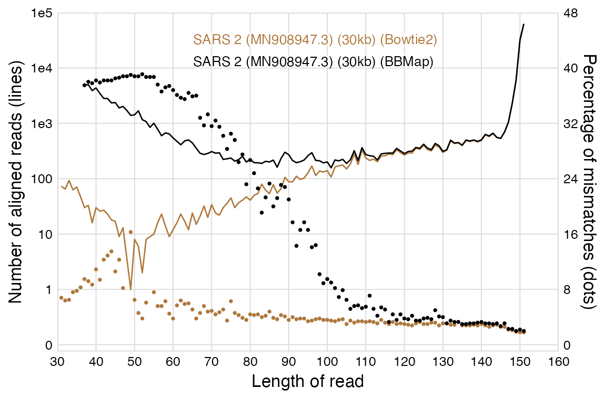
I ran BBMap with the same parameters as the mathematician from Hamburg (vslow k=8 maxindel=0 minratio=0.1), but if I would've ran it with the default parameters instead, the results would've been similar to Bowtie2.
I ran Bowtie2 with the default parameters:
bowtie2-build sars2.fa{,}
bowtie2 -p3 -x sars2.fa -1 SRR10971381_1.trim.fq.gz -2 SRR10971381_2.trim.fq.gz --no-unal|samtools sort -@2 ->sorted30.bam
I created a random 30,000-base reference sequence and a thousand random reads for each length between 30 and 150. When I ran BBMap with the same parameters as the mathematician from Hamburg, 372 out of 1000 reads of length 30 got aligned, but I got zero aligned reads for each length above 70. The proportion of mismatches was around 40% for most read lengths but 59% for length 70. This time I didn't get any multimapped reads so I didn't have to exclude them:
$ gshuf -e A -e C -e G -e T -rn30000|printf %s\\n \>ref $(paste -sd\\0 -)>ref.fa
$ n=1000;for i in {30..150};do gshuf -e A -e C -e G -e T -rn$[i*n]|awk '{ORS=NR%i==0?RS:""}1' i=$i|paste <(seq $n|sed s/^/$i./) -;done|seqkit tab2fx>reads.fa
$ bbmap.sh ref=ref.fa in=reads.fa outm=reads.mapped.sam vslow k=8 maxindel=0 minratio=0.1
[...]
$ awk -F\\t '/^[^@]/{l=length($10);sub(/.*NM:i:/,"");sub(/\t.*/,"");a[l]+=$0;n[l]++}END{for(i in a)print i,n[i],100*a[i]/n[i]/i}' OFMT=%.1f reads.mapped.sam
30 372 40.6
31 312 40.8
32 230 42.1
33 196 41.0
34 180 41.5
35 137 41.6
36 104 41.3
37 89 41.2
38 73 41.5
39 53 41.5
40 41 39.9
41 29 43.5
42 24 40.3
43 24 41.4
44 15 43.2
45 14 40.8
46 13 41.3
47 10 41.7
48 6 41.7
49 7 42.6
50 3 40
51 3 43.8
52 5 43.8
53 3 40.9
54 5 41.5
55 2 42.7
56 3 42.3
57 1 40.4
70 1 58.6
When I filtered out reads with indentity percent below 70, I was left with only 39 reads:
$ reformat.sh in=reads.mapped.sam out=reads.filtered.sam idfilter=70 ow=t
[...]
$ awk -F\\t '/^[^@]/{l=length($10);sub(/.*NM:i:/,"");sub(/\t.*/,"");a[l]+=$0;n[l]++}END{for(i in a)print i,n[i],100*a[i]/n[i]/i}' OFMT=%.1f reads.filtered.sam
30 17 28.6
31 11 28.4
32 2 23.4
33 2 27.3
34 5 28.2
35 1 28.6
38 1 28.9
When I ran BBMap with the default parameters instead of the parameters used by the mathematician from Hamburg, zero of the random reads mapped to the random reference genome (which is in fact what should happen when you're running an aligner with sensible parameters).
When I googled for "minratio=0.1" "bbmap", I found that the BBTools user guide included the command mapPacBio.sh in=reads.fq out=mapped.sam vslow k=8 maxindel=200 minratio=0.1, with the comment that the command can be used to "map with super-high sensitivity (useful for very-low-quality data, or remote homologies)". [https://jgi.doe.gov/data-and-tools/software-tools/bbtools/bb-tools-user-guide/bbmap-guide/]
The list of shell commands in the PDF by the Hamburg mathematician featured this BBMap command which was used to align the reads: mapPacBio.sh in=SRR10971381_1.fastq in2=SRR10971381_2.fastq outm=mapped.sam vslow k=8 maxindel=0 minratio=0.1. So maybe he copied the command from the BBTools user guide, because he even used the same output file name mapped.sam, he listed the parameters in the same order, and he used mapPacBio.sh instead of bbmap.sh.
The value for the K-mer length can range from 8 to 15, where the default value is k=13 and lower values are more sensitive. So the mathematician from Hamburg used the most sensitive possible value for the K-mer length.
The minratio parameter is no longer listed in the help message of BBMap, but I think it's because it has the same effect as the minid parameter but it uses a different scale, so it's basically redundant and the developer of BBMap recommended using minid instead. The default value for minid is 0.76 which is approximately equal to minratio=0.56. The developer of BBMap wrote the following: [https://www.biostars.org/p/376782/]
Sorry for the confusion; they set the same thing, just with different units. "minratio" is the internal number using the internal scoring system; if you use the "minid" flag it converts it to the equivalent minratio. So if you set "minid=0.76 " then it will be converted to approximately "minratio=0.56" and then the minratio variable will be set to 0.56. So there is no reason to set both of them. If you do set both of them, the last value will be used. I recommend minid over minratio because it is easier to read, but they accomplish the same thing.
"minid" is approximate since it adjusts minratio, or the ratio of the maximum possible internal score, but the internal score is not directly related to percent identity because of different penalties for substitutions, deletions, and insertions, which vary by length. If you need an exact %identity cutoff, use "idfilter=0.76" which will eliminate all alignments below 76% identity, as a postfilter. "minratio/minid" actually affect mapping, and prevent the creation of any alignments with an internal score below "minratio". As such, a high value of minid will make the program faster and a low value will make it slower. Whereas "idfilter" does not affect speed.
That said, I don't recommend using "idfilter" unless you have a good reason (like, a paper with a graph showing %identity cutoffs, for clarity; not for something like variant calling). "minid/minratio" are proportional to the internal score which should better model actual mutations or evolution, by trying to minimize the number of independant events rather than the edit distance; "idfilter=0.5", for example, will disallow a 100bp read from mapping with a 400bp deletion in the middle, since that would be only 20% identity. "minid=0.5" would allow this mapping because the internal score would actually still be quite high (maybe 0.9 of the maximum possible ratio).
The mathematician from Hamburg wrote:
Alignment with the nucleotide database on 05/12/2021 showed a high match (98.85%) with "Homo sapiens RNA, 45S pre-ribosomal N4 (RNA45SN4), ribosomal RNA" (GenBank: NR_146117.1, dated 04/07/2020). This observation contradicts the claim in [1] that ribosomal RNA depletion was performed and human sequence reads were filtered using the human reference genome (human release 32, GRCh38.p13). Of particular note here is the fact that the sequence NR_146117.1 was not published until after the publication of the SRR10971381 sequence library considered here.
But actually the date that is shown in the top right corner at the NCBI's website is the date when the entry was modified, and the original publication date of NR_146117.1 is in 2017. You can see the original publication date if you click the small "GenBank" menu in the top left corner and select "Revision History". [https://www.ncbi.nlm.nih.gov/nuccore/NR_146117.1?report=girevhist]
USMortality took the reference genomes of different viruses, and he generated random short reads for each virus with the wgsim utility which comes with SAMtools and with his own TypeScript script. [https://usmortality.substack.com/p/how-reliable-is-megahit] When he tried to assemble the short reads with MEGAHIT, he failed to get a complete contig for some viruses like HKU1, porcine adenovirus, HIV-1, and HIV-2, and when he used wgsim to simulate the reads, the length of his contig for HKU1 was only about 89% of the length of the original reference genome:
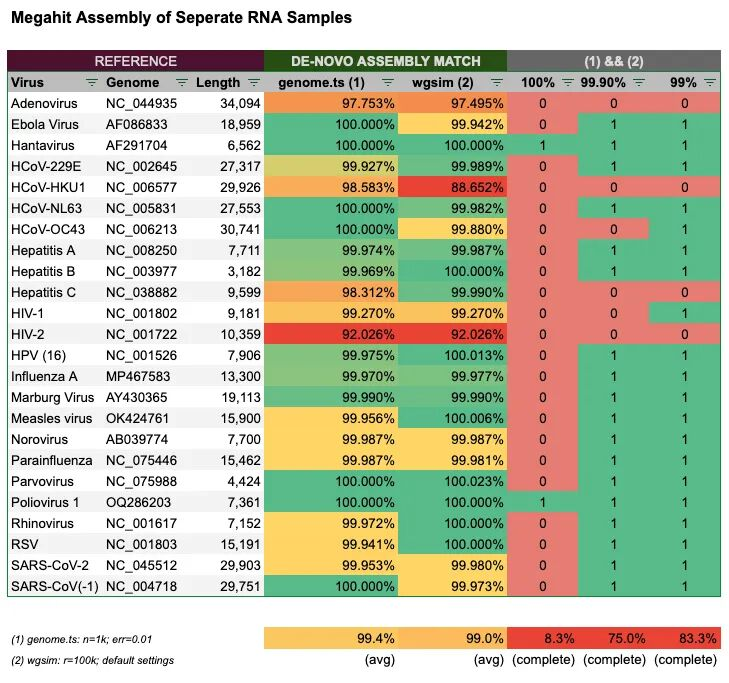
I tried replicating USMortality's experiment so that I used wgsim to generate 100,000 70-base reads for the reference genome of HKU1. When I ran MEGAHIT to assemble the reads, I got two different contigs, and the longer contig was only 26,533 bases long even though the reference genome of HKU1 is 29,926 bases long:
$ brew install megahit -s
[...]
$ brew install seqkit samtools
[...]
$ curl -s 'https://eutils.ncbi.nlm.nih.gov/entrez/eutils/efetch.fcgi?db=nuccore&rettype=fasta&id=NC_006577'>hku1.fa
$ wgsim -N100000 hku1.fa hku1_{1,2}.fq
[...]
$ megahit -1 hku1_1.fq -2 hku1_2.fq -o megahku
[...]
$ seqkit stat hku1.fa megahku/final.contigs.fa|column -t
file format type num_seqs sum_len min_len avg_len max_len
hku1.fa FASTA DNA 1 29,926 29,926 29,926 29,926
megahku/final.contigs.fa FASTA DNA 2 29,634 3,101 14,817 26,533
When I aligned the contigs with Bowtie2, I noticed that my two contigs covered positions 7-3108 and 3394-29927, so there was a gap of 285 bases between the contigs. But then I noticed that the gap fell within a region where the same 30-base segment was repeated 9 times (and there's also a few additional repeats which did not fall within the gap between the contigs):
$ bowtie2-build hku1{,}.fa
[...]
$ bowtie2 -p4 -x hku1.fa -fU megahku/final.contigs.fa|samtools sort ->hku1.bam
[...]
$ samtools view hku1.bam|awk -F\\t '{l=length($10);print$4,$6,l,$4+l}'|column -t
7 647M1I2453M 3101 3108
3394 26533M 26533 29927
$ seqkit subseq -r 3109:3393 hku1.fa
>NC_006577.2 Human coronavirus HKU1, complete genome
AGATGTTGTTACTGGTGACAATGACGATGAAGATGTTGTTACTGGTGACAATGACGATGA
AGATGTTGTTACTGGTGACAATGACGATGAAGATGTTGTTACTGGTGACAATGACGATGA
AGATGTTGTTACTGGTGACAATGACGATGAAGATGTTGTTACTGGTGACAATGACGATGA
AGATGTTGTTACTGGTGACAATGACGATGAAGATGTTGTTACTGGTGACAATGACGATGA
AGATGTTGTTACTGGTGACAATGACGATGAAGATGTTGTTACTGG
A paper about HKU1 said: "Genome analysis also revealed various numbers of tandem copies of a perfect 30-base acidic tandem repeat (ATR) which encodes NDDEDVVTGD and various numbers and sequences of imperfect repeats in the N terminus of nsp3 inside the acidic domain upstream of papain-like protease 1 among the 22 genomes." [https://pubmed.ncbi.nlm.nih.gov/16809319/] But NDDEDVVTGD is the translation of the 30-base repeated segment: seqkit translate<<<$'>a\nAATGACGATGAAGATGTTGTTACTGGTGAC'.
I ran wgsim using the default read length which is 70 bases, and I used paired reads instead of unpaired reads. If MEGAHIT would've had to assemble the contigs from unpaired reads that each were 70 bases long, how could it know how many times the 30-base segment was repeated if it can only see one a single 70-base window of the genome at a time? Actually one of the main reasons why the paired read layout is used is that it helps to assemble regions with repeats, because there are variable-length gaps between the forward and reverse reads so that the read pair covers a region that is longer than an individual read. [https://emea.illumina.com/science/technology/next-generation-sequencing/plan-experiments/paired-end-vs-single-read.html] But even though wgsim generated paired reads, I guess the region with repeats was so long and the read length was so short that the paired layout didn't help MEGAHIT to assemble the region correctly. (However it didn't help either to use a longer read length with wgsim or a higher K-value with MEGAHIT.)
USMortality also failed to assemble a complete contig for the genome of a porcine adenovirus, but that's because the genome contains a 723-base segment that is repeated twice between positions 29,481 and 30,929:
$ curl 'https://eutils.ncbi.nlm.nih.gov/entrez/eutils/efetch.fcgi?db=nuccore&rettype=fasta&id=NC_044935'>adeno.fa
$ seqkit seq -s adeno.fa|awk '{for(i=1;;i++){delete a;for(j=1;j<=length-i+1;j++)a[substr($0,j,i)][j];found=0;for(x in a){if(length(a[x])>1){found=1;for(y in a[x])print i,y,y+length(x)-1,x}}if(!found)exit}}'|sort -srnk1,1|awk 'NR>1&&$1!=x{exit}{x=$1}1'
725 29481 30205 CGAAGGACAACTCACCGTCCCCGCCACGGCCCCTTTAGTCTCAGGGAGCGCAGGCATCTCTTTCAACTACTCCAGCAATGACTTCGTCTTAGACAATGACAGTCTCAGTTTGAGGCCAAAGGCCATCTCTGTCACCCCTCCGCTGCAGTCCACAGAGGACACAATCTCCCTGAATTATTCTAACGACTTTTCTGTGGACAATGGCGCCCTCACCTTGGCTCCAACTTTCAAACCCTACACGCTGTGGACTGGCGCCTCACCCACAGCAAATGTCATTCTAACAAACACCACCACTCCCAACGGCACCTTTTTCCTATGCCTGACACGTGTGGGTGGGTTAGTTTTGGGTTCCTTTGCCCTGAAATCATCCATCGACCTTACTAGTATGACCAAAAAGGTCAATTTTATTTTTGATGGGGCAGGTCGGCTTCAGTCAGACTCCACTTATAAAGGGAGATTTGGATTTAGATCCAACGACAGCGTAATTGAACCCACAGCCGCAGGACTCAGTCCAGCCTGGTTAATGCCAAGCACCTTTATTTATCCACGCAACACCTCCGGTTCTTCCCTAACATCATTTGTATACATTAATCAGACATATGTGCATGTGGACATCAAGGTAAACACACTCTCTACAAACGGATATAGCCTAGAATTTAACTTTCAAAACATGAGCTTCTCCGCCCCCTTCTCCACCTCCTACGGGACCTTCTGCTACGTGCCCC
725 30205 30929 CGAAGGACAACTCACCGTCCCCGCCACGGCCCCTTTAGTCTCAGGGAGCGCAGGCATCTCTTTCAACTACTCCAGCAATGACTTCGTCTTAGACAATGACAGTCTCAGTTTGAGGCCAAAGGCCATCTCTGTCACCCCTCCGCTGCAGTCCACAGAGGACACAATCTCCCTGAATTATTCTAACGACTTTTCTGTGGACAATGGCGCCCTCACCTTGGCTCCAACTTTCAAACCCTACACGCTGTGGACTGGCGCCTCACCCACAGCAAATGTCATTCTAACAAACACCACCACTCCCAACGGCACCTTTTTCCTATGCCTGACACGTGTGGGTGGGTTAGTTTTGGGTTCCTTTGCCCTGAAATCATCCATCGACCTTACTAGTATGACCAAAAAGGTCAATTTTATTTTTGATGGGGCAGGTCGGCTTCAGTCAGACTCCACTTATAAAGGGAGATTTGGATTTAGATCCAACGACAGCGTAATTGAACCCACAGCCGCAGGACTCAGTCCAGCCTGGTTAATGCCAAGCACCTTTATTTATCCACGCAACACCTCCGGTTCTTCCCTAACATCATTTGTATACATTAATCAGACATATGTGCATGTGGACATCAAGGTAAACACACTCTCTACAAACGGATATAGCCTAGAATTTAACTTTCAAAACATGAGCTTCTCCGCCCCCTTCTCCACCTCCTACGGGACCTTCTGCTACGTGCCCC
USMortality also failed to get complete contigs for HIV-1 and HIV-2, but that's because HIV has a long terminal repeat where a long segment at the 5' UTR is repeated at the 3' UTR: [https://en.wikipedia.org/wiki/Long_terminal_repeat]
The HIV-1 LTR is 634 bp[5] in length and, like other retroviral LTRs, is segmented into the U3, R, and U5 regions. U3 and U5 has been further subdivided according to transcription factor sites and their impact on LTR activity and viral gene expression. The multi-step process of reverse transcription results in the placement of two identical LTRs, each consisting of a U3, R, and U5 region, at either end of the proviral DNA. The ends of the LTRs subsequently participate in integration of the provirus into the host genome. Once the provirus has been integrated, the LTR on the 5′ end serves as the promoter for the entire retroviral genome, while the LTR at the 3′ end provides for nascent viral RNA polyadenylation and, in HIV-1, HIV-2, and SIV, encodes the accessory protein, Nef.[6]
The long terminal repeat is 855 bases long in the reference genome of HIV-2:
$ curl -s 'https://eutils.ncbi.nlm.nih.gov/entrez/eutils/efetch.fcgi?db=nuccore&rettype=fasta&id=NC_001722'>hiv2.fa $ seqkit subseq -r 1:855 hiv2.fa|seqkit locate -f- hiv2.fa|cut -f1,4-6|column -t seqID strand start end NC_001722.1 + 1 855 NC_001722.1 + 9505 10359
If you use a higher k-value with MEGAHIT, it might help to deal with shorter repeats but not with these huge terminal repeats in HIV, since the maximum k-mer value supported by MEGAHIT is only 255. The paper about MEGAHIT says: "While a small k-mer size is favourable for filtering erroneous edges and filling gaps in low-coverage regions, a large k-mer size is useful for resolving repeats." [https://academic.oup.com/bioinformatics/article/31/10/1674/177884] And the paper about SPAdes says: "The choice of k affects the construction of the de Bruijn graph. Smaller values of k collapse more repeats together, making the graph more tangled. Larger values of k may fail to detect overlaps between reads, particularly in low coverage regions, making the graph more fragmented. Since low coverage regions are typical for SCS data, the choice of k greatly affects the quality of single-cell assembly. Ideally, one should use smaller values of k in low-coverage regions (to reduce fragmentation) and larger values of k in high-coverage regions (to reduce repeat collapsing)." [https://www.ncbi.nlm.nih.gov/pmc/articles/PMC3342519/]
USMortality wrote that when he mixed together simulated reads from multiple different viruses into a single FASTA file and he tried to assemble the reads with MEGAHIT, his longest contigs for both SARS2 and SARS1 only covered about 51% of the reference genome: [https://usmortality.substack.com/p/how-reliable-is-megahit]
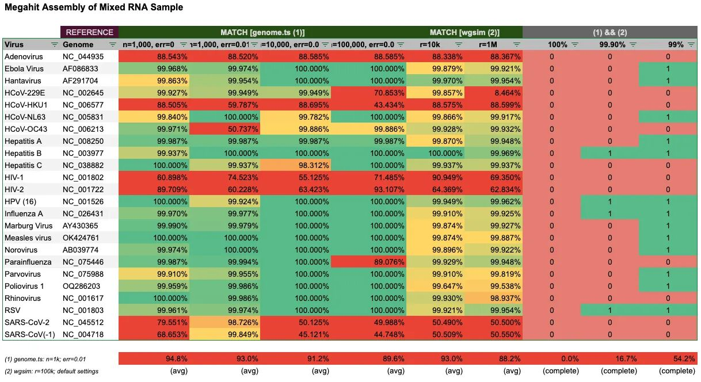
When I used wgsim to simulate reads for SARS2 and SARS1 and I ran MEGAHIT on the concatenated reads, I got three contigs for both SARS1 and SARS2. I got one contig for SARS1 which covered positions 1-15046 and another contig which covered positions 14992-29707, so for some reason the contigs were not merged even though they had 47 overlapping bases, and I got similar overlapping contigs for SARS2 which were split around position 15,100:
$ curl -s 'https://eutils.ncbi.nlm.nih.gov/entrez/eutils/efetch.fcgi?db=nuccore&rettype=fasta&id=NC_004718.3'>sars1.fa
$ curl -s 'https://eutils.ncbi.nlm.nih.gov/entrez/eutils/efetch.fcgi?db=nuccore&rettype=fasta&id=MN908947.3'>sars2.fa
$ for i in 1 2;do wgsim -N100000 sars$i.fa sars$i\_{1,2}.fq;done;for i in 1 2;do cat sars[12]_$i.fq>sars3_$i.fq;done
[...]
$ megahit -1 sars3_1.fq -2 sars3_2.fq -o megasars3
[...]
$ cat sars[12].fa>sars12.fa
$ bowtie2-build sars12.fa{,};bowtie2 -x sars12.fa -fU megasars3/final.contigs.fa|samtools sort ->sars3.bam
[...]
$ samtools view sars3.bam|awk -F\\t '{print$1,$3,$4,$6,length($10)}'|column -t
k79_7 NC_004718.3 1 15045M 15045
k79_6 NC_004718.3 14992 14714M 14714
k79_3 NC_004718.3 25165 247M 247
k79_5 MN908947.3 10 8109M1D6598M1D397M 15104
k79_0 MN908947.3 15062 2787M 2787
k79_2 MN908947.3 17779 64M1I11321M2D552M3D128M 12066
Then when I tried comparing parts of the SARS1 and SARS2 genomes around the region where the contigs were split, I noticed that SARS2 and SARS1 had an identical 74-base segment at that region:
$ (seqkit subseq -r 14950:15100 sars1.fa;seqkit subseq -r 15000:15200 sars2.fa)|mafft --clustalout -
[...]
NC_004718.3 --------------------ttttcgcgtatactaagcgtaatgtcatccctactataac
MN908947.3 ttatgaggatcaagatgcacttttcgcatatacaaaacgtaatgtcatccctactataac
*******.***** **.***********************
NC_004718.3 tcaaatgaatcttaagtatgccattagtgcaaagaatagagctcgcaccgtagctggtgt
MN908947.3 tcaaatgaatcttaagtatgccattagtgcaaagaatagagctcgcaccgtagctggtgt
************************************************************
NC_004718.3 ctctatctgtagtactatgacaaatagacagtttcatcagaaattattgaa---------
MN908947.3 ctctatctgtagtactatgaccaatagacagtttcatcaaaaattattgaaatcaatagc
********************* *****************.***********
NC_004718.3 ---------------------
MN908947.3 cgccactagaggagctactgt
The default read length used by wgsim is 70 bases, which is a few bases shorter than the length of the shared segment, but I failed to get single contigs for SARS1 and SARS2 even after I tried increasing the read length to 150 or 300. However when I increased the maximum K-value of MEGAHIT from 141 to 161, I was able to get single contigs for both SARS1 and SARS2 even with the default read length of 70:
$ megahit -1 sars3_1.fq -2 sars3_2.fq -o megasars4 --k-list 21,29,39,59,79,99,119,141,161 [...] 2023-10-27 15:43:10 - 2 contigs, total 59634 bp, min 29751 bp, max 29883 bp, avg 29817 bp, N50 29883 bp 2023-10-27 15:43:10 - ALL DONE. Time elapsed: 47.084499 seconds
USMortality downloaded the raw reads from a paper from 2020 where the genome of SARS2 was sequenced using nanopore sequencing. [https://www.ncbi.nlm.nih.gov/pmc/articles/PMC7179501/] He then aligned the reads against the reference genome of SARS2, and he posted the screenshots from IGV below with the description: "As you can see, the quality of these long Nanopore reads is really terrible - so many errors and inserts! I could not find a single read that perfectly aligns to either the head or the tail! Note, that the highlighted letters are errors, and the purple/black areas are inserts/deletions. Judge for yourself, but in my opinion, the amount of errors, does not increase confidence in the genome." [https://usmortality.substack.com/p/why-do-wu-et-al-2020-refuse-to-answer]
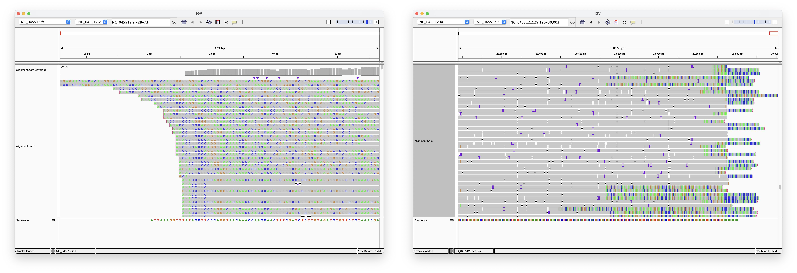
The reason why the reads in his screenshots are full of N bases and they have no T bases is that he forgot to convert U bases to T bases. And the reason why most reads appear to be full of errors is that they are actually soft-clipped parts of reads which were shown by IGV because he had enabled the "Show soft-clipped bases" option from the "Alignments" tab of the preferences. By default IGV doesn't display the letters within reads for all bases but only for bases which have a mismatch to the reference, but IGV also displays all letters within soft-clipped parts of reads which makes them look like mismatches (and the UI of IGV is a bit confusing because there is no visual indication of which part of reads are soft-clipped).
In order to accurately gauge the number of mismatches in IGV, you also have to uncheck "Quick consensus mode" from the context menu of the alignment view, because otherwise IGV will display mismatches as blanks unless the percentage of mismatches at the reference position is above a given threshold. [https://www.pacb.com/blog/igv-3-improves-support-pacbio-long-reads/] In order to save memory, IGV only displays up to about 100 reads for each position of the reference genome by default, but you can show all reads by unchecking "Preferences > Alignments > "Downsample reads". [https://software.broadinstitute.org/software/igv/book/export/html/37]
I downloaded the same nanopore reads that USMortality aligned in his post. [https://osf.io/8f6n9, file NanoporeDRS/Vero-Infected/20200222_0650_MN26136_FAN04901_ada1e2bf/VeroInf24h.all.fastq.zst] I then aligned the reads with minimap2:
curl -s 'https://eutils.ncbi.nlm.nih.gov/entrez/eutils/efetch.fcgi?db=nuccore&rettype=fasta&id=MN908947.3'>sars2.fa minimap2 -a --sam-hit-only -x map-ont sars2.fa <(seqkit seq --rna2dna Downloads/VeroInf24h.all.fastq.zst)>nano7.sam;samtools sort nano7.sam>nano7.bam;samtools index nano7.bam
When I opened the aligned reads in IGV, I disabled the option to show soft-clipped parts of reads, I disabled the downsampling option, and I disabled the quick consensus mode, I got 9 reads with starting position 1, and all except one of the reads had zero mismatches from Wuhan-Hu-1 within the first 10 bases (but all reads over a thousand hard-clipped bases at the start which are not shown by IGV):
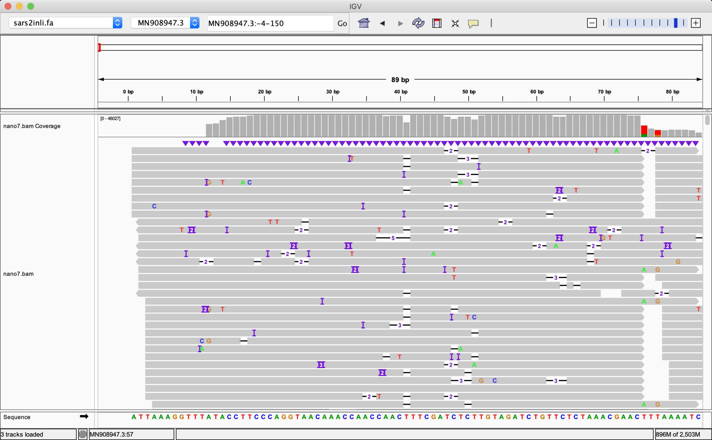
USMortality wrote: "Even when trimming off the leading three or four nucleotides from the reads, Megahit still assembles de-novo the head with two extra G bases at the head!" [https://usmortality.substack.com/p/why-do-wu-et-al-2020-refuse-to-answer]
However I was able to get rid of the two extra G bases when I trimmed the reads with fastp -f 5 -t 5, which removes the first 5 and last 5 bases from both forward and reverse reads. Then my longest MEGAHIT contig was 29,870 bases long, and it was otherwise identical to Wuhan-Hu-1 except it was missing the entire 33-base poly(A) tail.
There's 25 forward reads which match the first 20 bases of Wuhan-Hu-1 but which have two extra G bases added to the start:
$ seqkit locate -p GGATTAAAGGTTTATACCTTCC SRR10971381_1.fastq|cut -f1,4-|column -t seqID strand start end matched SRR10971381.718581 - 119 140 GGATTAAAGGTTTATACCTTCC SRR10971381.758993 - 86 107 GGATTAAAGGTTTATACCTTCC SRR10971381.1921582 - 105 126 GGATTAAAGGTTTATACCTTCC SRR10971381.2004837 - 105 126 GGATTAAAGGTTTATACCTTCC SRR10971381.2090745 - 105 126 GGATTAAAGGTTTATACCTTCC SRR10971381.2211935 - 105 126 GGATTAAAGGTTTATACCTTCC SRR10971381.2727470 - 105 126 GGATTAAAGGTTTATACCTTCC SRR10971381.4673132 - 103 124 GGATTAAAGGTTTATACCTTCC SRR10971381.6216519 - 104 125 GGATTAAAGGTTTATACCTTCC SRR10971381.6675729 - 117 138 GGATTAAAGGTTTATACCTTCC SRR10971381.7692719 - 105 126 GGATTAAAGGTTTATACCTTCC SRR10971381.8056736 + 3 24 GGATTAAAGGTTTATACCTTCC SRR10971381.10755198 - 105 126 GGATTAAAGGTTTATACCTTCC SRR10971381.11089222 - 105 126 GGATTAAAGGTTTATACCTTCC SRR10971381.12331153 - 105 126 GGATTAAAGGTTTATACCTTCC SRR10971381.17552714 - 105 126 GGATTAAAGGTTTATACCTTCC SRR10971381.19351707 - 120 141 GGATTAAAGGTTTATACCTTCC SRR10971381.19590294 - 104 125 GGATTAAAGGTTTATACCTTCC SRR10971381.19788065 - 104 125 GGATTAAAGGTTTATACCTTCC SRR10971381.22231571 - 117 138 GGATTAAAGGTTTATACCTTCC SRR10971381.23063694 - 105 126 GGATTAAAGGTTTATACCTTCC SRR10971381.23201569 - 105 126 GGATTAAAGGTTTATACCTTCC SRR10971381.24938341 - 119 140 GGATTAAAGGTTTATACCTTCC SRR10971381.27644056 - 119 140 GGATTAAAGGTTTATACCTTCC SRR10971381.28160997 - 86 107 GGATTAAAGGTTTATACCTTCC
In all of the reads shown above except a single read, the match is on the minus strand so the two extra G bases at the start of the read are actually two extra C bases at the end of the read. So that's why you have to trim the ends of the reads in order to get rid of the extra G bases at the start of the contig.
The reverse reads are sense to DNA and therefore antisense to RNA, so they're what people might intuitively expect to be the forward reads. The manual of the Takara RNA-Seq kit used by Wu et al. says: "For sequencing libraries produced with this kit, Read 1 generates sequences antisense to the original RNA. This contrasts with libraries produced by the original SMARTer Stranded Total RNA-Seq Kit - Pico Input Mammalian, for which Read 1 generates sequences sense to the original RNA." [https://www.takarabio.com/documents/User+Manual/SMARTer+Stranded+Total+RNA/SMARTer+Stranded+Total+RNA-Seq+Kit+v2+-+Pico+Input+Mammalian+User+Manual_050619.pdf] An answer at BioStars said that the reads in the Read 1 file are called forward reads regardless of whether they are sense or antisense relative to the sequenced genome: "For example, with Illumina paired-end sequencing, you get two reads: commonly called 'forward' and 'reverse' reads, or even just 'Read 1' and 'Read 2'. In this case, the terms 'forward' and 'reverse' refer only to the relative orientation of each read to the other, and do not in themselves imply anything about their orientation relative to, say, the coding strand of the original RNA molecule in an RNA-seq experiment. When you do a strand-specific protocol, depending on the protocol, these reads will now have an assigned strandedness relative to the original RNA molecule. For example, a particular protocol might be designed that the reverse read just happens to represent the actual sequence of the RNA, while the forward read represents the reverse-complement sequence." [https://www.biostars.org/p/46769/#46975]
In October 2023, Tom Cowan published a video where he claimed that because the longest contig generated by the mathematician from Hamburg was not identical to the longest contig reported by Wu et al., it meant that Wu et al. manually manipulated their contig so they added in features which made the genome seem like it had been tinkered in a lab, and therefore they managed to trick people into believing in the lab leak narrative. [https://www.bitchute.com/video/Jt7uiAp9LfWs/] So Cowan said that therefore the paper by Wu et al. laid the foundation for the lab leak narrative.
Cowan said: "The Fan Wu people made this whole 30,000-string nucleotide up and specifically put in parts that would guarantee there would be this lab leak story, then that is the origin of the story. [...] With those 56 million plus pieces, can you actually assemble this 30,000 base pair genome, or did they simply make it up from scratch - not from scratch, they took what they got and then manually - in other words, these Fan Wu group put on the dodo bird part deliberately and specifically, and it was not actually in the original reads." [time 32:50] And a bit later Cowan said: "So us - meaning Stefan and our group that helped fund this - hired a mathematician who could do the sequencing - and said, 'Here, take these 56 million reads and see if you can get this 30,000-base pair genome.' And surprise, surprise, he can't. That genome doesn't exist out of that raw data, which can only mean, and I mean only mean, that the Fan Wu group made that genome up based on - they took some 26, 28 thousand, 25 thousand - we don't know - and then actually added on manually pieces and specifically made them look like flesh-eating dodo bird beaks. In other words, they put, quote, 'scary spike protein' and 'cleavage site' sequences from other published sequences like HIV, and put those not into a particle, not into a virus that can be released, but into the computer database. That is the only place that genome exists, not in the real world." [time 40:00] (I didn't even know that the mathematician from Hamburg was hired by the group of Lanka and Cowan.)
I tried running fastp and MEGAHIT with the same parameters that were listed in the paper by the mathematician from Hamburg:
curl "https://www.ebi.ac.uk/ena/portal/api/filereport?accession=SRR10971381&result=read_run&fields=fastq_ftp"|sed 1d|cut -f2|tr \; \\n|sed s,^,ftp://,|xargs wget -q fastp -i SRR10971381_1.fastq.gz -I SRR10971381_2.fastq.gz -o SRR10971381_1.fastq -O SRR10971381_2.fastq megahit -1 SRR10971381_1.fastq -2 SRR10971381_2.fastq -o megahit_result
My longest contig was 29,802 bases long like in the case of the mathematician from Hamburg, so it's probably identical to his contig. When I compared my contig to the first 30,474-base version of Wuhan-Hu-1 at GenBank, there was one nucleotide change in the nucleocapsid gene at position 29,293 of the alignment, but all other differences between the two contigs were in the untranslated regions at the beginning and end of the genome (so there were no differences in the regions of the spike protein which have been used to argue in favor of an anthropogenic origin of the virus):
$ curl -s 'https://eutils.ncbi.nlm.nih.gov/entrez/eutils/efetch.fcgi?db=nuccore&rettype=fasta&id=MN908947.1'>wu1.fa
$ seqkit sort -lr megahit_result/final.contigs.fa|seqkit head -n1|seqkit seq -rp|cat - wu1.fa|mafft --thread 4 ->temp.aln
[...]
$ aldi2(){ cat "$@">/tmp/aldi;Rscript --no-init-file -e 'm=t(as.matrix(Biostrings::readDNAStringSet("/tmp/aldi")));diff=which(rowSums(m!=m[,1])>0);split(diff,cumsum(diff(c(-Inf,diff))!=1))|>sapply(\(x)c(if(length(x)==1)x else paste0(x[1],"-",tail(x,1)),apply(m[x,,drop=F],2,paste,collapse="")))|>t()|>write.table(quote=F,sep=";",row.names=F)';}
$ R -e 'if(!require("BiocManager",quietly=T))install.packages("BiocManager");BiocManager::install("Biostrings")'
[...]
$ aldi2 temp.aln
;k141_7732 flag=1 multi=445.0000 len=29802;MN908947.1 Wuhan seafood market pneumonia virus isolate Wuhan-Hu-1, complete genome
1-11;----------G;CGGTGACGCAT
13-14;TT;CA
18-19;GG;CA
22-27;-----T;CCCACC
29293;G;C
29818-30473;--------------------------------------------------------------------------------------------------------------------------------------------------------------------------------------------------------------------------------------------------------------------------------------------------------------------------------------------------------------------------------------------------------------------------------------------------------------------------------------------------------------------------------------------------------------------------------------------------------------------------------------------------------------------------------;CCTAATGTGTAAAATTAATTTTAGTAGTGCTATCCCCATGTGATTTTAATAGCTTCTTCCTGGGATCTTGATTTCAACAGCCTCTTCCTCATACTATTCTCAACACTACTGTCAGTGAACTTCTAAAAATGGATTCTGTGTTTGACCGTAGGAAACATTTCAGTATTCCTTATCTTTAGAAACCTCTGCAACTCAAGTGTCTCTGCCAAAGAGTCTTCAAGGTAATGTCAAATACCATAACATATTTTTTAAGTTTTTGTATACTTCCTAGGAATATATGTCATAGTATGTAAAGAAGATCTGATTCATGTGATCTGTACTGTTAAGAAACACTTCAAAGGAAAACAACCTCTCATAGATCTTCAAATCCTGTTGTTCTTGAGTTGGAATGTACAATATTCAGGTAGAGATGCTGGTACAAAAAAAGACTGAATCATCAGGCTATTAGAAAGATAAACTAGGCCTCTAACATAGTAACTTTAACAGTTTGTACTTATACATATTTTCACATTGAAATATAGTTTTATTCATGACTTTTTTTGTTTTAGCTTCTCTGTCTTCCATTATTTCAAGCTGCTAAAAATTAAAAATATCCTATAGCAAAGGGCTATGGCATCTTTTTGTAAAAATAAGGAAAGCAAGGTTTTTTGATAATC
The output above shows all segments of the alignment where my longest contig differs from the first version of Wuhan-Hu-1, where the first column shows the position of the segment, the second column shows the segment in my longest contig, and the third column shows the segment in the first version of Wuhan-Hu-1. From the last line of the output above, you can see that the first version of Wuhan-Hu-1 ends with a long piece of the human genome but my longest contig only has gaps at the corresponding spot of the alignment. You can try doing a BLAST search by going here: https://blast.ncbi.nlm.nih.gov/Blast.cgi?PROGRAM=blastn. Then paste the nucleotide sequence on the last line above into the big text box and click "BLAST". It shows that the sequence has 99.7% match to a human genome with about 93% query coverage (where there's not 100% coverage because BLAST skipped the first 38 bases of the segment because they came from the genome of SARS2 but they were missing from my contig).